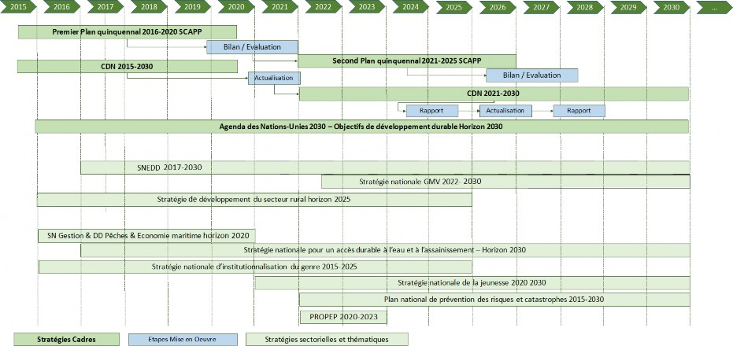
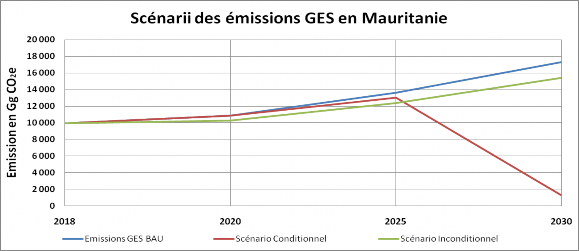
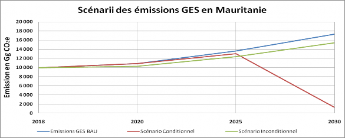
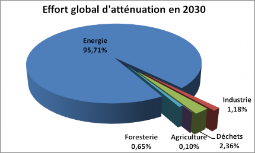
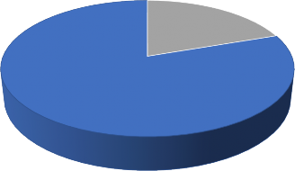

Promouvoir un développement résilient au climat Et la création d’emplois verts durables
MESSAGES CLÉS DE LA CDN 2021-2030
Le total des émissions des GES de la Mauritanie représente 0,015% des émissions globales mondiales. La plus grande contribution à ce total d’émissions provient de l’AFAT et de l’énergie. Ces deuxsecteurs totalisent 99% des émissions.
Le scénario de base « cours normal des affaires » calculé sur la base des données de croissance de la SCAPP montre que les émissions des gaz à effet de serre direct, exprimées en termes de potentiel de Réchauffement Global (PRG), sont globalement en nette progression, passant de 3481,213Gg Eq-CO2 en 1990 à9944,618 Gg Eq-CO2 en 2018, soit une augmentation de 185,67% (Source BUR2 2021).
La Mauritanie appartient à l’une des régions du monde les plus vulnérables au changement climatique dont les effets affectent déjà tous les secteurs de son économie, ses écosystèmes et ses populations, en particulier, les femmes et les enfants.
La Mauritanie est pleinement engagée dans la mise en œuvre de la CCNUCC et l’Accord de Paris pour contribuer aux efforts mondiaux de réduction des émissions globales deGES en mettant à la disposition de la Communauté mondiale tout le potentiel d’atténuation dont dispose le pays. Ce potentiel est constitué par l’énorme gisement de production d’énergie propre, éolienne et solaire.
Ainsi, la CDN actualisée de la Mauritanie prévoit une réduction nette des émissions de GES à l’échelle de l’économie de 11% en 2030 par rapport au scénario de référence avec les moyens propres du pays soutenu par un appui international comparable à celui reçu jusqu’à 2020. Avec un appui plus conséquent, la Mauritanie pourrait assurer sa neutralité carbone, allant jusqu’à une réduction de 92% conditionnelle par rapport au BAU.
Le coût global de cette ambition est estimé à 34255 Million US$ dont 635 Million US$ est inconditionnel soit 1,85%.
Au regard de sa vulnérabilité extrême, la Mauritanie a élargi son ambition d’adaptation pour couvrir les axes suivants : protection et conservation des écosystèmes y compris les zones humides, gestion durable des parcours, conservation de la biodiversité, pêche et aquaculture, habitat et urbanisme, agriculture et sécurité alimentaire y compris l’amélioration génétique, santé, eau, gestion du littoral, prévention des événements climatiques extrêmes, infrastructures et éducation. Cet élargissement est basé sur le programme de préparation à l’accès au Fonds vert pour le climat (Readiness)et des résultats des premières études réalisées dans le cadre du processus d’élaboration du Programme national d’adaptation (PNA) du pays.
Les besoins en financement des mesures d’adaptation sont de 10 626,46 millions de $USD dont 10174,63 millions $US conditionnels et 451,83 millions $US non-conditionnels.
Outre les financements conditionnels requis pour assurer les ambitions d’atténuation et mettre en œuvre les actions d’adaptation du pays, la mise en œuvre de la CDN 2021-2030 de la Mauritanie nécessite des appuis en termes de renforcement de capacités de tous les acteurs du développement, d’intégration des aspects transversaux (genre, jeunesse, droits humains, emploi et éducation) et l’opérationnalisation d’un système de mesure, vérification et notification pour assurer le suivi et l’évaluation de l’action climatique.
En harmonisant son processus d’élaboration avec celui de la SCAPP et en s’appuyant sur les stratégies et programmes sectoriels du pays, la CDN définit le cadre de la politique climatique du pays à l’horizon 2030. Elle offre un cadre de concertation et de dialogue à toutes les parties prenantes pour définir des programmes transformateurs, intégrés, inclusifs, propres et durables.
PREMIERE PARTIE–RESUME EXECUTIF
1. Introduction
La Mauritanie est parmi les pays sahéliens les plus touchéspar les sécheresses récurrentes depuis 1968. La désertification qui en résulte est d’autant plus forteque l’effet du climat, conjugué à l’action de l’homme, entraîne des conséquences directes sur unmilieu déjà très précaire. La vulnérabilité du pays au changement climatique touche l’ensemble dessecteurs vitaux de l’économie nationale.
En ratifiant la CCNUCC, la Mauritanie s’engage résolument dans le processus mondial de luttecontre le réchauffement climatique par la limitation des émissions de GES et la mise en place destratégies d’adaptation compatibles avec sa politique de développement durable. Elle réaffirme cet engagement en ratifiant l’Accord de Paris et soumet sa première Contribution déterminée nationale (CDN) en 2015.Bien que les émissions du pays constituent à peine 0,015% des émissions globales mondiales, la Mauritanie s’engagepar sa CDN à participer pleinement àl’effort de la communauté internationale, en mettant à disposition, sous forme conditionnelle, unpotentiel d’atténuation d’environ 33,56 millions de tonne Eq-CO2, soit 22,3%par rapport auxémissions projetées à la même année, selon le scénario de référence (cours normal des affaires), pendant la période 2020-2030.
En 2015, le processus d’élaboration de la CDN s’effectue alors que le pays changeait de vision stratégique de développement en passant du Cadre stratégique de lutte contre la pauvreté (CLSP, 2001-2015) à la Stratégie nationale de croissance accélérée et de prospérité partagée (SCAPP) dont le premier plan d’action quinquennal couvre la période de 2016 à 2020.
En 2021, et en conformité avec le cycle quinquennal d’actualisation des CDN promu par l’Accord de Paris (AP), la Mauritanie actualise sa CDN en même temps qu’elle établit le bilan du premier plan quinquennal de mise en œuvre de la SCAPP qui doit donner lieu à ladéfinition du deuxième plan quinquennal 2021-2025. La concomitance des deux processus, SCAPP et CDN, assure la cohérence entre les deux cadres politiques et la synergie des programmes qui y sont inscrits.
Alors que la SCAPP constitue la vision stratégique de développement de la Mauritanie pour la période 2016-2030 et sert de cadre de référence pour toutes les actions de développement entreprises par l’Etat, les organismes publics et socioprofessionnels ainsi que les partenaires techniques et financiers (PTF), la CDN sert de cadre de définition de la politique climatique du pays et d’instrument de sa mise en œuvre. Comme la SCAPP, elle intègre l’Agenda 2030 des Nations unies et les cibles classées prioritaires pour le pays parmi les objectifs de développement durable (ODD) ainsi que les orientations de l’Agenda 2063 de l’Union africaine. Elle tire la légitimité des ambitions d’atténuation qu’elle préconise et des actions d’adaptation qu’elle définit des stratégies sectorielles et thématiques dont elles sont issues.

Figure 1 : Principales stratégies du cadre de planification du développement social, économique, culturel et environnemental (i.e. développement durable) de la Mauritanie
2. Ambitions d’atténuation de la CDN 2021-2030 actualisée
La CDN actualisée de la Mauritanie prévoit une réduction nette des émissions de GES à l’échelle de l’économie de 11% en 2030 (courbe verte) par rapport au scénario de référence (BAU, courbe bleue) avec les moyens propres du pays soutenu par un appui international comparable à celui reçu jusqu’à 2020. Avec un appui plus conséquent, la Mauritanie pourrait assurer la neutralité carbone de son économie, en réalisant une réduction de 92% (courbe rouge) par rapport au BAU. Le coût global de cette ambition est estimé à 34255 Million US$ dont 635 Million US$ est inconditionnel soit 1,85%.
L’ambition d’atténuation couvre les quatre secteurs d’émissions (Energie, PIUP, AFAT et Déchets). Les efforts d’atténuation les plus importants reposent sur l’important potentiel d’énergies renouvelables du pays et les capacités d’augmentation de la part des énergies propres dans le mix énergétique pour atteindre plus de 13 GW renouvelables en 2030 mais aussi du secteur AFAT avec un potentiel axé sur la foresterieà travers des projets et programmes ambitieux (Grande muraille verte, programmes de régénération assistée des forêts, régénération des parcours et lutte contre la désertification), l’agroécologie et l’amélioration de la productivité de l’élevage
Par rapport à la CDN de 2015, le secteur énergie passe en première place en termes de potentiel d’ambition, devant l’AFAT. En effet, et malgré les importants efforts consentis par le pays en termes de reboisement et de restauration des terres dégradées notamment dans le cadre du programme de la Grande muraille verte, les ambitions d’atténuation de la CDN- 2015 dans le secteur de l’Agriculture, foresterie et autres affectations des terres (secteur AFAT) de 10000 ha par an de reboisement n’ont pas été atteintes en raison de la faiblesse des financements extérieurs mobilisés. Sur la période considérée, 2015-2020, le maximum annuel qui a pu être atteint est de seulement 1800 ha (Source DPREM/MEDD).
En revanche, les résultats atteints en termes de mix énergétique ont dépassé les efforts conditionnels prévus, passant de 18% en 2015à33,91% en 2018, avec une amélioration encore plus importante grâce à la mise en service du parc éolien de 100 MW de Boulenouar qui permet d’atteindre un mix énergétique de 48% en 2021.
L’ambition d’atténuation du pays est composée au total de 55 mesures dont 33 mesures inconditionnelles d’une capacité totale de 1834,268 Gg Eq CO2par rapport au scenario de cours normal des affaires (BAU) et 22 mesures conditionnelles pour une réduction en 2030 de 16134,62 Gg Eq. CO2représentant une réduction de 92% par rapport au BAU. Ces mesures sont données dans le Tableau no. 2 (en détail en Annexe 1 Rapport synthèse).

Figure 2 : Scénarii des émissions de GES en Mauritanie
3. Actions d’adaptation préconisées par la CDN 2021-2030
D’une vulnérabilité extrême, la Mauritanie a élargi son ambition d’adaptation pour couvrir les axes suivants : protection et conservation des écosystèmes y compris les zones humides, gestion des parcours, conservation de la biodiversité, pêche et aquaculture, habitat et urbanisme, sécurité alimentaire y compris l’amélioration génétique, santé, infrastructures, éducation, et prévention des événements climatiques extrêmes. Cet élargissement est basé sur le programme de préparation à l’accès au Fonds vert pour le climat (Readiness) et des résultats des premières études réalisées dans le cadre du processus d’élaboration du Programme national d’adaptation (PNA) du pays.
Les besoins en financement des mesures d’adaptation sont de 10626,46 millions de $USD dont 10174,63 millions $US conditionnels et 451,83millions $US non-conditionnels. Les actions préconisées sont détaillées dans le Tableau no.3.
Pour relever les défis d’intégration du changement climatique dans les stratégies et politiques sectorielles, la mise en œuvre des actions d’adaptation identifiées doit être planifiéedans le cadre d’une approche intersectorielle et intégrée qui inclut toutes les parties prenantes et les secteurs concernés. Pour ce faire, la CDN 2021-2030 doit servir de cadre de concertation et de dialogue pour définir des programmes transformateurs qui répondent aux besoins de renforcement de la résilience des populations et des écosystèmes au regard de leur vulnérabilité au changement climatique.
Les co-bénéfices des mesures d’atténuation pour l’adaptation et vice-versa ainsi que les synergies avec les autres cadres de planification du développement durable, en particulier les ODD, sont mis en évidence dans le mécanisme de financement et annexe 1 du document de synthèse.
4. Besoins en renforcement de capacités et appui à la mise en œuvre
Outre l’appui financier exprimé en appui conditionnel pour les mesures d’atténuation et les actions d’adaptation, la CDN 2021-2030 définit les besoins en matière de renforcement de capacités, de transfert de technologies et de formation notamment pour l’éducation des jeunes.
En termes de renforcement de capacités, la mise en place d’un système opérationnel de mesure, vérification et notification (MNV et MRV, en anglais) est une action prioritaire dans le processus de mise en œuvre de la CCNUCC et de l’Accord de Paris. La mise en place de ce système est obligatoire pour le pays (date butoir 2024 de remise du rapport biannuel de transparence- BTR intial). En outre, et bien que non contraignant pour le pays, l’élaboration d’un plan d’action pour la mise en œuvre de la CDN est un prérequis pour le MNV/MRV.
La Mauritanie a déjà fourni des efforts substantiels dans ce sens. La mise en place et l’institutionnalisation du réseau national des points focaux climat sectoriels (PFS), de la société civile et du secteur privé, en 2013, constitue une première étape. En septembre 2020, le Ministère de l’environnement et du développement durable (MEDD) a consolidé son dispositif institutionnel en instituant la Direction du climat et de l’économie verte (DCEV) pour coordonner l’ensemble du programme national sur le changement climatique. Ce dispositif institutionnel est consolidé par un réseaud’experts indépendants du milieu académique qui a contribué à l’élaboration de toutes les communications nationales, inventaires de GES et rapports biannuels actualisés, etc. requis dans le cadre des rapports à la CCNUCC.
Nonobstant tous ces acquis, d’importantes lacunes persistent dans la collecte et le traitement des données nécessaires pour rendre compte d’une manière transparente et claire de la mise en œuvre des politiques, mesures et stratégies climatiques du pays. Ces lacunes ont été identifiées dans le cadre de la préparation du document d’identification du projet qui a été soumis au programme CBIT (Capacity Building Initiative for Transparency) du FEM-7 pour un montant total de 1263650 $US.
Le projet permettra de définir les responsabilités des acteurs de la CDN, en particulier la manière dont les ministères autres que le MEDD participeront à la mise en œuvre de la CDN et au fonctionnement du système MRV.
Les autres priorités en termes de renforcement de capacités pour la mise en œuvre de la CDN concernent la poursuite des efforts de préparation (Readiness) des départements sectoriels, du secteur privé et de la société civile.
Elles concernent également l’intégration des dimensions transversales dans les programmes et projet climat. Ainsi, l’intégration des dimensions genre, jeunesse et droits humains est prévue dans tous les projets et programmes développés dans le cadre de la CDN en lui réservant une part de 10% du budget de chaque programme ou projet (Estimation basée sur l’appréciation du groupe expert Genre/jeunesse/emploi/éducation et du groupe de travail des experts se basant sur le programme de travail de Doha ainsi que l’accord de Paris en son article 12). De même, les aspects de création d’emplois et d’amélioration des cursus éducatifs pour la prise en charge des enjeux du changement climatique sont considérés parmi les priorités d’appui à la mise en œuvre de la CDN.
Les évaluations des besoins en transfert de technologies ont été réalisées en 2017. Elles ont conduit à l’identification de deux secteurs prioritaires pour l’adaptation (agriculture, parcours et forêts) et deux secteurs prioritaires pour l’atténuation (énergie et déchets. Elles devront être mises à jour au regard des nouvelles options d’atténuation et d’adaptation retenues dans la CDN 2021-2030 actualisée.
5. Besoins en financement de la CDN 2021-2030 et plan de financement
Tableau 1 : Récapitulatif des besoins en financements de la CDN 2021-2030 actualisée
|
Domaines CDN |
Financements Inconditionnels |
Financements Conditionnels |
Total par Domaine en million de $US |
|
Atténuation |
635 |
33621 |
34256 |
|
Adaptation |
451,83 |
10174,63 |
10626,46 |
|
Intégration genre, jeunesse et droits humains |
45,183 |
1017,463 |
1062,646 |
|
Emplois et Education |
- |
337,75 |
337,75 |
|
Renforcement des capacités |
- |
279,37 |
279,37 |
|
Mise en place et opérationnalisation du système de mesure, vérification et notification |
1,263 650 |
1,263 650 |
|
|
Total |
1132,013 |
45429,213 |
46561,226 |
En Mauritanie, il n’y a pas de système de financement spécifiquement dédié au changement climatique. Le MEDD a développé plusieurs compétences en matière de mobilisation des financements climatiques auprès des fonds internationaux spécifiques (fonds vert pour le climat, fonds d’adaptation, fonds des banques multilatérales pour le développement, etc.) et des PTF.
Cependant, des renforcements de capacités doivent être programmés pour favoriser les investissements du secteur privé, renforcer le système financier national à travers la contribution du système bancaire national au financement du développement durable en général et des actions climatiques, en particulier et, enfin, pour envisager des financements novateurs à travers par exemple la génération de nouvelles ressources fiscales à même de financer les actions climatiques.
Aussi, la Mauritanie compte en plus de ses appuis financiers directs, soutenir ses besoins en financement de l’atténuation à travers :
La plateforme NAMA, notamment pour les programmes d’efficacité énergétique et énergie renouvelables.
L’adoption et l’inclusion des marchés internationaux du carbone tels que le Mécanisme pour un Développement Propre (MDP) dans les accords post 2020 sur le climat conformément à l’Article 6 de l’Accord de ParisiCette approche vise la mise en place d’un prix sur le carbone pouvant servir comme moyen efficace pour refléter ces coûts tout en envoyant des signaux économiques et politiques clairs encourageant une décarbonisation rentable. Ces instruments, couplés à un régime comptable approprié (MNV/MRV), pourraient aider à financer certains investissements dans les infrastructures sobres en carbone et résilientes au changement climatique.
Des options de développement sobres en carbone contenues dans sa CDN 2021, pourraient être financéespar le transfert international d’actifs carbone (résultat d’atténuation transférable au niveau international) en tenant compte des considérations d'intégrité de l'environnement et de transparence.
Dans ce cadre, la Mauritanie compte satisfaire une partie de ses ambitions d’adaptation conditionnelles sur ce type de processus.
Les récents contrats signés pour l’introduction des nouvelles techniques d’hydrogène vert constituent un exemple de ce type de mécanismes.
Tableau 2 : Mesures d’atténuation de la CDN 2021-2030 actualisées par secteur (Coût et potentiel cumulé de réduction pour la période)
|
Secteurs / Sous-Secteurs |
Contributions aux efforts d’atténuation totale |
Défis / Contraintes |
Mesures préconisées |
|
Energie – 37452,46 Gg Eq-CO2 dont 17,86% inconditionnel |
|||
|
Energie renouvelable 31817,81 Gg Eq-CO2 dont 6,06% inconditionnel |
|||
|
Efficacité énergétique –5634,65 Gg Eq-CO2 dont 84,62% inconditionnel |
|||
|
ENERGIE (renouvelable et efficacité énergétique) |
37452,46 Gg Eq-CO2 soit (93,10%) |
|
|
|
Transport –92,65 Gg Eq-CO2 dont 5,21% inconditionnel |
|||
|
Transport |
92,65 Gg Eq-CO2 soit (0,23%) |
|
|
AFAT – 474,402 Gg Eq CO2 dont 37,24% inconditionnel |
|
Agriculture & Elevage |
58,382 Gg Eq-CO2 soit (0,14%) |
|
|
|
Foresterie et autres affectations des terres |
418,02 Gg Eq-CO2 soit (1,04%) |
|
|
|
Déchets – 1573,99 Gg Eq CO2 dont 0,56 % inconditionnel |
|||
|
Déchets solides |
1573,99 Gg Eq-CO2 soit (3,91%) |
|
|
|
Industrie – 633,96 Gg Eq CO2 dont 55,56 inconditionnel |
|||
|
Efficacité énergétique dans l'industrie |
633,96 Gg Eq-CO2 soit (1,58%) |
|
|
|
Le potentiel de cumul de réduction des GES 2021-2030 est de :40227,462 GgEq-CO2 |
|||
Tableau 3 : Mesures d’adaptation de la CDN 2021-2030 actualisées par secteur
|
Secteurs |
Aléas climatiques/Proje ctions |
Vulnérabilités / Impacts |
Actions adaptation |
|
Ressources naturelles |
Sécheresses plus fréquentes et plus sévères Perturbation de la saison des pluies Augmentation de la température Tempêtes de sable et poussière Pluies intenses plus sévères |
|
|
|
Littoral |
Montée du niveau de la mer |
|
|
|
Agriculture |
Sécheresses plus fréquentes et plus sévères Perturbation de la saison des pluies Tempêtes de sable et poussière Augmentation de la température Pluies intenses plus sévères ; |
|
|
|
Elevage |
Sécheresses plus fréquentes et plus sévères Augmentation de la température ; |
|
|
|
Pêche Continentale |
Perturbation de la saison des pluies Augmentation de la température Tempêtes de sable et poussière |
|
|
|
Eau & Assainissement |
Sécheresses plus fréquentes et plus sévères Perturbation de la saison des pluies Pluies intenses plus sévères |
|
|
|
Habitat, Urbanisme et Aménagement du territoire |
Sécheresses plus fréquentes et plus sévères Augmentation de la température Tempêtes de sable et poussière Pluies intenses plus sévères |
|
|
|
Santé |
Sécheresses plus fréquentes et plus sévères Perturbation de la saison des pluies Augmentation de la température Pluies intenses plus sévères |
|
|
|
Education/ Enseignement Supérieur/recherche |
|
||
|
Emploi |
|
DEUXIEME PARTIE – DOCUMENT DE SYNTHESE
1. Introduction
Pays Non Annexe 1 de la CCNUCC, la Mauritanie appartient à la zone du Sahel africain la plus touchéepar les sécheresses récurrentes depuis 1968. La désertification qui résulte est d’autant plus forteque l’effet du climat, conjugué à l’action de l’homme, entraîne des conséquences directes sur unmilieu déjà très précaire. La vulnérabilité du pays au changement climatique touche l’ensemble dessecteurs vitaux de l’économie nationale.
En ratifiant la CCNUCC, la Mauritanie s’engage résolument dans le processus mondial de luttecontre le réchauffement climatique par la limitation des émissions de GES et la mise en place destratégies d’adaptation compatibles avec sa politique de développement durable. Elle réaffirme cet engagement en ratifiant l’Accord de Paris et soumet sa première Contribution déterminée nationale (CDN) en 2015. Bien que les émissions du pays constituent à peine 0,015% des émissions globales mondiales, la Mauritanie s’engagepar sa CDN à participer pleinement àl’effort de la communauté internationale, en mettant à disposition, sous forme conditionnelle, unpotentiel d’atténuation d’environ 33,56 millions de tonne Eq-CO2, soit 22,3%par rapport auxémissions projetées à la même année, selon le scénario de référence (cours normal des affaires), pendant la période 2020-2030.
Le rapport de l’OMM2 stipule que si la première série des CDNs n’était pleinement mise en œuvre cela entraînerait un réchauffement de 2,9 à 3,4 degrés C au cours du siècle. Une ambition accrue en matière d'atténuation est donc essentielle pour atteindre l'objectif de l'Accord de Paris afin de limiter le réchauffement bien en dessous de 2 degrés C, soit 1,5 degré C. Dans ce sens, l’article 4 de l’Accord de Paris, ainsi que les décisions 1/CP.19, 1/CP.20 et 1/CP.21 de la CCNUCCinstituent un cycle quinquennal d’actualisation des CDNs qui doit correspondre à une progression par rapport à la contribution déterminée au niveau national antérieure et à son niveau d'ambition le plus élevé possible.
A l’échelle globale, l’actualisation de la CDN est l’occasion pour la communauté internationale d’améliorer la planification de l’adaptation et renforcer l’engagement et la transparence des pays en matière d’atténuation des émissions de gaz à effet de serre en vue d’atteindre les objectifs assignés par l’Accord de Paris et limiter la montée de la température mondiale à +1.5 C° à l’horizon 2050, par rapport à l’ère préindustrielle.
Ainsi, la CDN 2021-2030 rend compte des efforts consentis par la Mauritanie pourcontribuer à la progression dans le temps des efforts globaux tout en reconnaissant son besoin en soutiensmultiformes (renforcement des capacités, accès aux technologies et financement) pour leur mise en œuvre effective.
En effet, la Mauritanie vise à assumer une contribution d’atténuation des émissions de gaz à effet de serre (GES) plus significative que celle de sa précédente et première CDN. De même, le pays entend raffermir ses efforts d’adaptation au changement climatique pour renforcer la résilience deses populations, écosystèmes et infrastructures les plus vulnérables aux aléas climatiques. Et ce, conformément à sa responsabilité et en totale harmonie avec les objectifs de saSCAPPqui constituent la vision stratégique de développement de la Mauritanie pour la période 2015-2030 et sert de cadre de référence pour toutes les actions de développement entreprises par l’Etat, les organismes publics et socioprofessionnels ainsi que les Partenaires Techniques et Financiers (PTF) au cours de la période 2015-2030. Elle intègre l’Agenda 2030 et les cibles classées prioritaires pour le pays parmi les Objectifs de Développement Durable (ODD) ainsi que l’agenda 2063 de l’Union Africaine.
A l’échelle nationale, l’actualisation de la CDN constitue pour la Mauritanie une opportunité pour renforcer l’intégration du changement climatique dans les politiques et stratégies de développement du pays en tirant les leçons de la mise en œuvre de la CDN-2015.
En 2015, le processus d’élaboration de la CDN s’effectue alors que le pays changeait de vision stratégique de développement en passant du Cadre stratégique de lutte contre la pauvreté (CLSP, 2001-2005) à la Stratégie nationale de croissance accélérée et de prospérité partagée (SCAPP) dont le premier plan d’action quinquennal couvre la période de 2016 à 2020.
En 2021, et en conformité avec le cycle quinquennal d’actualisation des CDN promu par l’Accord de Paris (AP), la Mauritanie actualise sa CDN en même temps qu’elle établit le bilan du premier plan quinquennal de mise en œuvre de la SCAPP et la définition du deuxième plan quinquennal 2021-2025. La concomitance des deux processus, SCAPP et CDN, assure la cohérence entre les deux cadres politiques et la synergie des programmes qui y sont inscrits.
Alors que la SCAPP constitue la vision stratégique de développement de la Mauritanie pour la période 2015-2030 et sert de cadre de référence pour toutes les actions de développement entreprises par l’Etat, les organismes publics et socioprofessionnels ainsi que les partenaires techniques et financiers (PTF), la CDN sert de cadre de définition de la politique climatique du pays et d’instrument de sa mise en œuvre. Comme la SCAPP, la CDN actualisée intègre l’Agenda 2030 des Nations unies et les cibles classées prioritaires pour le pays parmi les objectifs de développement durable (ODD) ainsi que les orientations de l’Agenda 2063 de l’Union africaine. Elle tire la légitimité des ambitions d’atténuation qu’elle préconise et des actions d’adaptation qu’elle définit des stratégies sectorielles et thématiques dont elles sont issues. Elle sert d’instrument de coordination entre les secteurs et de base pour les partenaires techniques et financiers (PTF) pour planifier l’intégration des questions climatiques dans leur cadre stratégique d’intervention dans le pays et des programmes et projets qu’ils y soutiennent.
La vision de la CDN 2021-2030 actualiséede « Promouvoir un développement économique et social résilient au climat et la création d’emplois verts durables » porte un changement de base dans l’ambition de l’objectif de l’atténuation, passant d’un objectif de réduction des émissions GES de 22,3% dans la CDN 2015 vers une neutralité carbone d’ici 2030 dont une réduction de 11% inconditionnelde l’émission de l’année 2030 selon le scenario BAU.
La Mauritanie considère la mise à jour de la CDN comme suffisamment juste et ambitieuse en ce qu’elle va au-delà de la proposition de stratégies et de programmes accordées aux PMA dans le paragraphe 6 de l’article 4 de l’Accord de Paris. Cette ambition est en mesure de contribuer à une économie à faible émission de carbone et résiliente au changement climatique d'ici 2030, conformément à la situation nationale et à la SCAPPà l’horizon 2030.
2. Circonstances nationales
Tableau 4 : Données nationales
|
Superficie / longueur de côtes |
1 030 000 km2 / 720 kilomètres de littoral (ONS)3 |
|
Climat |
Sud : climat sahélien, chaud et semi-aride. Nord : climat Saharien, chaud et aride à hyper aride (ONM)4 |
|
Population |
3 537 368 habitants, dont 54% de moins de 20 ans (RDHP 2013), 4 173 077 en 2020 (ONS) |
|
Population urbaine |
48,30% en 2013 contre 52,8 % en 2020 (ONS) |
|
PIB |
|
|
PIB par habitant |
1 392 USD fin 2019 (MAEPSP) |
|
Croissance du PIB |
3,2% en 2020 contre une croissance de 6,3% anticipée avant lacrise COVID (MAEPSP) entre -2 et -6% prévu en 2021 |
|
Part de l’agriculture (y compris l'élevage) dans le PIB |
17% (MAEPSP) |
|
Emissions en 2018 (année de référence) |
9944,618 Gg éq-CO2 (RNI, 2020)7 |
|
Emissions en 2020 |
10 423 Gg Eq-CO2 (BUR, 2021) |
|
Emissions par habitant |
2,5 tonnes Eq-CO2 par habitant en 2018 (RNI-BUR2) |
|
Emissions par habitant hors AFAT 2018 |
0,86 tonnes Eq-CO2 (RNI- BUR2) |
|
Accès à l’électricité |
48 % des ménages (WB)8 |
|
Mix électrique actuel |
En 2015 hors opérateurs miniers : 13,80 % hydro, 17,40% ER et 68,80% thermique En 2020 hors opérateurs miniers : 16.73 % hydro, 17.67 % ER et 65,6 % thermique (DEME)9 |
L’élaboration de la première CDN en 2015 était concomitante à l’adoption de la SCAPP 2015-2030 porteuse d’une nouvelle vision du développement économique, social et environnemental de la Mauritanie basée sur les leçons acquises et les résultats obtenus de la mise en œuvre du Cadre stratégique de lutte contre la pauvreté (CSLP 2001-2015).
En 2021, l’actualisation de la CDN intervient alors que le pays conduit le bilan du premier quinquennat de la mise en œuvre de la SCAPP (2015-2020) pour définir le plan d’action du second quinquennat (2021-2025). Elle intervient également dans un contexte de développement péjorée par la pandémie de la COVID-19 qui a frappé de plein fouet toute l’économie du pays, engendrant ainsi une crise sans précèdent. Au-delà du choc résultant des mesures de confinement et de la paralysie de l’activité économique, l’intégration économique mondiale a accentué l’ampleur d’une telle crise. Par ailleurs, les coûts des mesures sanitaires, sécuritaires et de prévention, associés à une conjoncture internationale peu favorable ont engendré des effets négatifs sur les finances publiques du pays. Pour faire face à ce choc exogène, le Gouvernement a mis en place un Plan national multisectoriel de riposte à la COVID-19 afin d'atténuer l'impact de la pandémie sur les populations, sur les secteurs économiques et le milieu naturel. Ce plan s’articule autour des piliers suivants :
Développement d'infrastructures de soutien à la croissance
Amélioration de l'offre sociale et soutien à la demande
Valorisation du potentiel des secteurs productifs et accélération de l'atteinte de l'autosuffisance alimentaire
Appui au secteur privé (formel et informel)
Environnement et création d'Emplois
Gouvernance et mise en œuvre du programme.
Figure 3 : Principales stratégies du cadre de planification du développement social, économique, culturel et environnemental de la Mauritanie (i.e. développement durable)
3. Composante atténuation de la CDN
3.1.Ambition d’atténuation de la Mauritanie
Ambition de la CDN 2021-2030
La CDN actualisée de la Mauritanie prévoit une réduction nette des émissions de GES à l’échelle de l’économie de 11% en 2030 (courbe verte) par rapport au scénario de référence (BAU, courbe bleue) avec les moyens propres du pays soutenu par un appui international comparable à celui reçu jusqu’à 2020. Avec un appui plus conséquent, la Mauritanie pourrait assurer sa neutralité carbone, allant jusqu’à une réduction de 92% (courbe rouge) par rapport au BAU. Le coût global de cette ambition est estimé à 34255 Million US$ dont 635 Million US$ est inconditionnel soit 1,85%.

Figure 4 : Scénarii des émissions de GES en Mauritanie, horizon 2030
Le bilan de la mise en œuvre de la SCAPP durant le premier quinquennat 2015-2020 conduit àun changement de priorités : le secteur Agriculture/Foresterie/Affectation des Terres (AFAT) identifié comme principal secteur d’atténuation potentiel par la CDN 2015, a enregistré peu de progrès du fait du manque de financement mobilisé pour le secteur.Le financement inconditionnel malgré la volonté politique exprimée ces dernières années à travers des projets et programmes d’envergure (Grande muraille verte, Projets reforestation, projets dégradation des terres…) n’a pas permisd’atteindre l’objectif fixé de 10.000 ha par an tel que planifié dans la CDN 2015.Le maximum enregistré sur la période 2015-2020 est de 1800 ha pour une seule année,touteinterventionprise en considération.
En revanche, les résultats atteints en termes de mix énergétique ont dépassé les efforts conditionnels prévus, passant de 33,91% en 2018 contre une part de 18% en 2015. Cette situation a été fortement améliorée avec la mise en service du parc éolien 100 MW de Boulenouar pour atteindre un mix de 48 % en 2021.
Ainsi, l’ambition d’atténuation de la Mauritanie avancée dans sa CDN actualisée 2021-2030 bâtit sur ces résultats et repose sur l’important potentiel d’énergies renouvelables du pays.
L’ambition inconditionnelle d’atténuation est composée de 33 mesures d’atténuation couvrant les 5 secteurs d’émissions avec une capacité de 1834 Gg Eq.CO2. L’ambition conditionnelle comporte 22 actions couvrant également tous les secteurs pour une réduction de 16008 GgEq-CO2 représentant une réduction de 92% par rapport au BAU.
Les émissions de GES en Mauritanie restent dominées par le secteur Agriculture/Foresterie/Affectation des Terres (AFAT), en particulier l’élevage qui comptabilise à lui seul 52,65% des émissions. Le secteur de l’énergie est la deuxième source d’émission. Le secteur Procédés Industriels et utilisation des produits PIUP est faiblement développé. Malgré sa faible participation dans le bilan des émissions des GES du pays, le secteur des déchets constitue un véritable défi de développement. Les déchets solides municipaux, industriels et commerciaux ont la particularité d’avoir une faible teneur en humidité (moins de 10%) ce qui en limite la fossilisation et le pays ne dispose pas de système d’assainissement collectif de base pour traiter les déchets liquides. Ainsi, la couverture d’accès à un assainissement collectif est de 1% à Nouakchott et 4% à Nouadhibou, les deux principales villes du pays.
Nonobstant la faible contribution du pays dans les émissions globales de GES, la Mauritanie dispose d’un important potentiel d’atténuation notamment en termes d’énergies renouvelables et, dans une moindre mesure, dans le secteur AFAT et celui des déchets. Ainsi, les mesures d’atténuation identifiées dans la CDN 2021-2030 couvrent ces cinq secteurs de l’économie, elles sont listéesen Annexe no.1 avec leur contribution présentée dans le tableau no. 1 suivant.
Tableau 5 : Répartition sectorielle de l’atténuation en 2030
|
Secteur |
Contribution aux efforts d’atténuation totale du pays (Gg.Eq. CO2) en 2030 |
Nombre de mesures |
Total |
|
|
Inconditionnell es |
Conditionnell es |
|||
|
Energie, 17 052,98 GgEq-CO2 dont 9,27% inconditionnel, réparti en : |
||||
|
15385,48 (85,623%) |
10 |
5 |
15 |
|
4523,93 (8,82%) |
14 |
5 |
19 |
|
92,65 (0,46%) |
3 |
5 |
8 |
|
Industrie |
211,314 (1,176%) |
1 |
1 |
2 |
|
Déchets |
568,46 (6,164%) |
1 |
2 |
3 |
|
AFAT, 136,13 GgEq-CO2 réparti en : |
||||
|
18,794 (0,105%) |
2 |
1 |
3 |
|
117,34 (0,653%) |
2 |
3 |
5 |
|
Total |
17968,888 |
33 |
22 |
55 |

Figure 5 : Effort total d’atténuation en 2030 réparti par secteur
Le secteur de l’énergie domine l’ambition d’atténuation du pays avec 95,71% dont la génération électrique représente 92,8%. Dans ce cadre, la Mauritanie entend recourir à la coopération volontaire au titre de l'article 6 de l'Accord de Paris pour atteindre une partie de cetobjectif.
Le coût total des efforts d’atténuation de la Mauritanie est évalué à 34255,84 Mo $US dont 2% (634,61 Mo $US) non conditionnel et 98% (33621,23 Mo $US) conditionné à la mobilisation de ressources externes.
|
Secteurs |
Financements Inconditionnels |
Financements Conditionnels |
Total en Millions de $US |
|
Energie |
627,69 |
33428,61 |
34056,30 |
|
Industrie |
0,70 |
1,40 |
2,10 |
|
Agriculture |
0,21 |
1,21 |
1,42 |
|
Foresterie |
5,40 |
16,10 |
21,50 |
|
Déchets |
0,61 |
173,91 |
174,52 |
|
Total |
634,61 |
33621,23 |
34255,84 |

Figure 6 : Répartition de l’effort totalcumulé d’atténuation 2021-2030, conditionnel vs. non conditionnel
3.4. Comparaison CDN 2015 et CDN 2021-2030 actualisée
L’objectif d’atténuation de la CDN 2021-2030 est plus ambitieux que celui de la CDN 2015 en termes de réduction absolue de GES à l’horizon 2030 qui passe de 33 559,32 GgEqCO2 (2015) à 40 470,21 GgEqCO2 (2021) même si en pourcentage l’objectif inconditionnel peut paraître inférieur (11% en 2021 contre 12% en 2015), les 12% de 2015 est calculé sur un total de 22,3% de l’émission en 2030 ce qui fait environ 2,7% de l’émission en 2030.
Pour mettre en exergue les améliorations apportées dans la mise à jour de la CDN, le tableau suivant présente la comparaison entre les CDN 2015 et 2021.
Tableau 6 : Comparaison entre CDN 2015 et CDN 2021-2030 actualisée
|
Composants d'amélioration |
CDN actuelle (2021) |
CDN initial (2015) |
|
Ambition d'atténuation |
||
|
Renforcer l'objectif GES |
|
|
|
|
|
|
Objectif de la contribution d’atténuation :
|
Objectif de la contribution d’atténuation :
|
|
|
Renforcer ou ajouter des politiques et des actions : |
|
|
|
Renforcer ou ajouter une cible sectorielle : |
La mise à jour de la CDN focalise sur le potentiel énergétique renouvelable dans la nouvelle vision stratégique du pays, y compris des composantes technologiques non prises en compte dans l’évaluation des besoins technologique telles que la production de l’hydrogène vert |
La première CDN reposait sur le potentiel d’atténuation du secteur AFAT avec, en particulier, des actions de reboisement d’envergure. |
|
Aligner la mise en œuvre de la NDC avec les objectifs longs termes des stratégies nationale et sectorielles existantes : |
La mise à jour de la CDN fait écho au bilan du premier quinquennat de mise en œuvre de la SCAPP 2016-2030, elle reste en parfaite harmonie avec la SCAPP et les stratégies sectorielles qui en découlent. |
Pendant la préparation de la CDN initiale, le pays était en phase de transition stratégique en passant CSLP 2001-2015, vers SCAPP et sesobjectifs à long terme. La Stratégie Nationale pour l’Environnement et le Développement Durable (SNEDD) n’a été élaborée qu’en 2017. |
|
Mise en œuvre |
||
|
Ajouter des actions ou des mesures pour renforcer la mise en œuvre : |
|
Les Mesures sont présentées de manière succincte dans le document de référence
|
3.5. Clarté, transparence et compréhension de la CDN 2021-2030
Conformément aux lignes directrices de l’Annexe 1 de la Décision 4/CMA1 (Atténuation), les informations requises pour faciliter la clarté, la transparence et la compréhension de la CDN actualisée de la Mauritanie sont fournies dans le tableau suivant.
Tableau 7 : Information pour faciliter la clarté, la transparence et la compréhension de la CDN actualisée de la Mauritanie
|
1. Informations quantifiées sur le point de référence, y compris, le cas échéant, une année de base |
|
|
a. Année(s)deréférence,année(s)debase,péri ode(s)de référence ou autre(s) point(s) dedépart. |
2018 |
|
b. Informations quantifiables sur les indicateurs de référence, leurs valeurs dans la ou les année(s) de référence,année(s)debase,période(s)de référenceou autre(s) point(s) de départ et, le cas échéant, dans l’annéecible. |
L’indicateur de référence est quantifié sur la base des émissions nationales totales de gaz à effet de serre (GES). Pour l’année de référence 2018, Le niveau d’émission de l’année de référence était de 9944,618 GgEq CO2. |
|
c. Pour les stratégies, plans et actions visés au paragraphe 6 de l’article 4 de l’Accord de Paris, où les politiques et mesures en tant qu’éléments de contributionsdéterminéesauniveaunatio nal lorsquele paragraphe 1 (b) ci-dessus n’est pas applicable, les Partiesdoiventfournird’autresinformation s pertinentes. |
NA |
| Cible par rapport à l’indicateur de référence, exprimée numériquement, par exemple en pourcentage ou en quantité de réduction. |
Une réduction net te desémissions de GESà l’échellede l’économiede 11% en 2030 (ligne verte) par rapport au scénariode référence (BAU ligne bleu), avec les moyens propres du pays appuyés par un soutien international largement comparable à celui reçu jusqu’ à 2020. Avec un soutien plus conséquent, la Mauritanie pourrait aller jusqu’à une réduction des émissions, assurant une neutralité carbone de l’ordre de 92,49% (ligne rouge), par rapport au BAU (cf. Figure no.1). |
|
e. Informations sur les sources de utilisées pour quantifier le (s) point (s) de référence. |
La quantification des indicateurs de référence a été basée sur les données de l’inventaire national des émissions des GES communiqué dans le second rapport biennal actualisé en 2021. |
| f. Informations sur les circonstances dans lesquelles le pays partie peut mettre à jour les valeurs de |
L’inventairenationaldes GES est examiné dans le cadre de l’ICA par la TTE, ensuivant les méthodologies et les lignes directrices du GIEC de 2006, le 30 Juin 2021 et en utilisant les données nationales fournies dans le tableau no.3. Les informations sur les indicateurs de références ont été mises à jour suivant le niveau 1. Ces informations peuvent être mises à jour et recalculées au regard des améliorations méthodologiques continues ou de la mise à disposition d’informations pertinentes non disponibles auparavant. Les informations sur les mises à jour effectuées seront inclusesdanslesrapportspertinentsprésentés àlaCCNUCCet,à partir de 2024, dans les rapports biennaux sur la transparence. |
|
2. Délais et/ou périodes de mise en œuvre |
|
|
a. Calendrieret/oupériodedemiseenœuvre |
2021-2030 |
|
b. Qu’il s’agisse d’un objectif annuel ou pluriannuel, selon le cas. |
Une seule année d’objectif : 2030 |
|
3. Périmètre et couverture |
|
|
a. Description générale de l’objectif d’atténuation. |
Engagement inconditionnel de réduction des émissions deGESde11%(1905GgEq-CO2)en2030comparé au scénario (BAU) avec les niveaux de soutien international en vigueur en 2020. Cette réduction pourra atteindre la neutralité carboneavec un soutien international plus important, permettant la mise en valeur d’une partie plus conséquente dupotentiel d’énergie renouvelable du pays. Cette réduction conditionnelle sera de 16008,045 GgEq-CO2soit 92,49% en2030comparé au scénario (BAU). |
|
b. Secteurs, gaz, catégories et puits couverts par la contribution déterminée au niveau national, y compris, le cas échéant, conformément aux lignes directrices du GIEC. |
L’engagement de la CDN prend en compte toutes les émissions et les absorptions anthropogéniques, telles que rapportées dans le rapport d’inventaire du BUR2, et plus particulièrement : Tous les secteurs, tels que définis par les lignes directrices 2006 du GIEC notamment : Energie Procédés Industriels et Utilisation des Produits (PIUP) Agriculture, Foresterie et Autres Affectations des Terres (AFAT) Déchets. Les gaz à effet de serre inclus dans les lignes directrices 2006 du GIEC, notamment CO2, CH4, N2O, HFCs, NOx, SO2, COVNM, et CO. Toutes les catégories qui se produisent sur le territoire national, telles qu'elles sont incluses dans Les lignes directrices 2006 du GIEC sont incluses dans le BUR2 de la Mauritanie. |
|
c. Comment le pays Partie a tenu compte des paragraphes 31 c) et d) de la décision 1 / CP.21. |
La CDN inclut toutes les catégories d’émissions ou d’absorptions anthropiques estimées dans les inventaires de gaz à effet de serre. Aucune source, aucune activité et aucun puits qui était inclus danslaversionprécédentedelaCDNn’aétéexclu. • Les améliorations de l’inventaire GES ont été prises en compte dans la comparaison entre la CDN initiale et l’actuelle (cf. tableau no.2). Seules les catégories d’émissions anthropiques ou d’absorptions qui n’existent pas dans le pays sont excluent. Le plus grand effort est mis sur le secteur de l’énergie car c’est lesecteur qui présente leplus grand potentiel d’atténuation, avec la plus grande probabilité de mise en œuvre. Cependant aucun secteur n’est exclu. L’analyse n’a pas été alignée sur les catégories clé de l’inventaire desGES. |
|
d.Co-avantagesd’atténuationrésultantdesm esures d’adaptation et / ou des plans de diversification économique, y compris la description des projets,mesuresetinitiativesspécifiquesd esmesures d’adaptation et / ou des plans de diversification économique desParties. |
Les co-bénéfices des mesures d’atténuation sur l’adaptation et vice-versa ainsi que les synergies avec les autres cadres de planification du développement durable, en particulier les ODD sont identifiés dans les tableaux no.1 et 2 (dernière colonne) auxquels il convient d’ajouter d’autres co-bénéfices comme l’amélioration de la qualité de l’air, les réductions potentielles en coûts pour les utilisateurs et la meilleure qualité de vie pour les populations. |
|
4. Processus de planification |
|
|
a. Informations sur les processus de planification que le pays partie a entrepris pour préparer sa CDN et, le cas échéant, sur les plans de mise en œuvre du pays partie, y compris, le cas échéant : |
|
|
i. Arrangements institutionnels nationaux, participation du public et engagement avec les communautés locales et les peuples autochtones, d'une manière sensible au genre. |
Processus d’actualisation de la CDN Le processus d’actualisation de la CDN a été lancé,en 2021, il a comptéles principales étapes suivantes : Janvier – avril 2021 : phase préparatoire Avril 2021 : lancement officiel du processus d’actualisation de la CDN lors d’un Conseil des ministres Mai – juin 2021 : réalisation d’une première série de consultations sectorielles pour statuer sur l’état d’avancement des actions d’atténuation et des objectifs d’adaptation inscrits dans la CDN 2015 et les principaux changements à apporter Juillet 2021 : échange élargi avec les diverses parties prenantes du secteur public, pour recueillir les données nécessaires pour informer le processus technique d’actualisation de la CDN. Fin juillet - début août 2021 : rédaction et processus de réajustement avec les secteurs publics. Août 2021 : restitution officielle de la CDN actualisée au Réseau National des Points Focaux Changement Climatique, task-force qui inclut les représentants du secteur public, de la société civile et du secteur privé, pour validation de la version provisoire de la CDN actualisée. Septembre 2021 : Atelier national de validation de la CDN y inclus réception des commentaires de certains PTF (Banque mondiale, UNICEF et FAO) et autres acteurs La consultation et la concertation avec les échelles infranationales (régionale et locale) n’ont pas pu être réalisées du fait des contraintes de temps et de budget. Cependant, un programme pour la diffusion et la promotion de la CDN actualisée à ces échelles aussitôt son adoption par le Conseil des ministres, au mois de septembre 2021,est élaboré par la DCEV. Arrangements institutionnels pour la mise en œuvre de la politique climatique Dans un effort pour consolider les exigences de transparence de la CCNUCC, la Mauritanie a mis en place, en septembre 2020, une Direction du Climat et de l'Economie Verte (DCEV), au sein du Ministère de l'Environnement et du Développement Durable (MEDD) afin de coordonner l'ensemble de son programme national sur le changement climatique. Cette instance est dirigée par un Directeur national, associé à un Directeur adjoint et à trois services nouvellement créés en charge respectivement de : la Vulnérabilité et l'Adaptation ; Activités et stratégies ; et IGES et d'atténuation. La Direction dispose également d’une unité chargée du traitement et de l’archivage des données et informations collectées, incluant les études et rapports sectoriels et thématiques. La DCEV s'appuie, par ailleurs, sur une task-force constituée par un réseau de points focaux sectoriels (PFS), représentants désignés des ministères de tutelle, de la société civile et des organisations du secteur privé. Ce réseau est composé de 38 membres dont 7 femmes. Des groupes de travail sectoriels ont été mise en place dans les ministères clés. Ils ont bénéficié de renforcement des capacités pour leur permettre de participer activement dans la préparation de l’actualisation de la CDN. Ce dispositif institutionnel est piloté par le point focal sectoriel au niveau ministériel et par la DCEV au niveau national. Le dispositif est complété par un réseau d’experts indépendants, issus du monde académique, pour contribuer à l’élaboration des études nécessaires ainsi que des rapports dus au titre de Partie à la CCNUCC. |
|
ii. Questions contextuelles, y compris, entre autres, le cas échéant : |
|
|
ii (a). Les circonstances nationales, telles que la géographie, le climat, l’économie, le développement durable et l’élimination de la pauvreté. |
Position géographique La Mauritanie est un pays côtier du nord-ouest africain, situé entre les latitudes septentrionales de 15 à 27 degrés et les longitudes occidentales de 5 et 17 degrés, avec une superficie totale de 1 030 700 km2. Le pays compte depuis 2015, 15 provinces ou Wilayat qui sont subdivisées en Moughataa (i.e. départements) subdivisées à leur tour en 218 communes. Au plan physique, la Mauritanie se caractérise par la platitude de son relief, avec des altitudes faibles, souvent inférieures à 500 m à l’exception de la Kédia d’Idjil qui culmine à 915 m. Les paysages sont caractérisés par la monotonie des plateaux tabulaires et des immenses étendues caillouteuses ou sableuses. Pays à dominante désertique, la Mauritanie dispose de grandes étendues pastorales et de seulement 0,5 % de terres arables, avec une population estimée à 4,2 million en 2020 avec une proportion urbaine de plus en plus importante (52,8 % en 2020 contre 48,3 % en 2013). La Mauritanie est totalement saharienne dans sa partie nord et sahélienne dans sa partie sud, elle se caractérise par un climat généralement chaud et sec marqué par des hivers relativement doux (avec des températures minimales moyennes de 19 à 23°C) et des périodes d’hivernage très courtes (environ trois mois). En saison sèche, les températures dépassent le seuil de 40°C dans la quasi-totalité des régions du pays (exception faite de Dakhlet Nouadhibou). Climat Saharien au Nord et sahélien au Sud, généralement chaud et sec, doux en bordure de l'Océan Atlantique avec quatre mois de saison de pluie (de juin à septembre) Les précipitations annuelles moyennes varient entre 500 mm au Sud et moins de 50 mm au Nord du pays. Economie nationale La croissance économique a augmenté, de 3,6 % en 2018 à 6,3 % en 2019, sous l’effet du boom minier soutenu par une croissance modérée des secteurs non extractifs. Cette croissance a subi une contraction de 3,6% en 2020 en raison de l’impact économique de la pandémie mondiale de coronavirus (COVID-19), pour atteindre 2% et-6% entre le dernier semestre de 2020 et le premier de 2021. Les risques liés à la pandémie viennent exacerber les aléas climatiques, le retard dans les réformes structurelles et l’insécurité régionale. Malgré la réussite de la première phase de la SCAPP (2016-2020), ces obstacles entravent la poursuite des réformes engagées. Le pays compte cependant sur un avenir meilleur avec la mise en exploitation d’autres ressources particulièrement énergétiques (gisement gazier, énergies renouvelables, etc.). Développement durable La SCAPP est une stratégie parapluie qui englobe tous les secteurs de développement du pays ; elle constitue le cadre de référence et de cohérence des politiques de développement socio-économique durable du pays. Concomitamment, et depuis quelques années, plusieurs stratégies sectorielles ont intégré la problématique du changement climatique en alignement au cadre de programmation nationale qu’était le Cadre Stratégique de Lutte contre la Pauvreté (CLSP) qui a évolué, en 2016, en SCAPP dont, en particulier : La Stratégie nationale pour l’environnement et le développement durable (SNEDD) 2017-2021 ; La Stratégie de développement du secteur rural (SDSR) : horizon 2025 Le Plan national de développement agricole (PNDA) 2016-2025 Le Plan national de développement de l’élevage (PNDE) 2018-2025 La Stratégie de développement du secteur de l’eau et de l’assainissement (SNADEA, 2016-2030) ; La stratégie de gestion responsable pour un développement durable des pêches et de l’économie maritime, 2015-2019. |
|
ii (b). Meilleures pratiques et expérience liées à la préparation de la CDN. |
La CDN a capitalisé sur les capacités analytiques, la pratique participative, l'expérience, les outils et la base de connaissances qui ont été créés et améliorées durant les processus de préparation des documents habilitants du pays. Dans un cadre de concertation englobant l’ensemble des parties prenantes, 55 mesures d’atténuation sectorielles avec des objectifs quantifiables de réduction individuelle ont été identifiées. La mise en place et l’institutionnalisation du réseau national des points focaux sectoriels en2013 constitue une première étape dans la mise en œuvre d’un système MRV opérationneldevantpermettre le suivi et l’évaluation de la mise en œuvre de la CDN. Pour ce faire, le pays compte sur l’appui du FEM à travers le financement de la CBIT pour la mise en place de son MRV national. L’expérience partagée dans la mise en œuvre de la CDN initiale où le secteur de l’énergie alors émergent était secondaire par rapport au secteur AFAT (premier secteur de l’émission GES dans le pays) et la participation active des PFS dans le processus de révision de la CDN conduit la Mauritanie a misé sur la valorisation deses potentialités énergétiques et deses ressources propres dans lerespect des objectifs du développement durable de l’Agenda 2030 des Nations unies tels que priorisés par le pays10. |
|
ii (c). Autres aspirations et priorités contextuelles reconnues lors de l’adhésion à l’Accord de Paris. |
|
|
b. Informations spécifiques applicables aux Parties, y compris les organisations d’intégration économique régionaleetleursÉtatsmembres,quisontp arvenusà un accord pour agir conjointement en vertu du paragraphe 2 de l’article 4 de l’Accord de Paris. |
La Mauritanie participe activement àl’initiative « Desert to Power » de la Banque africaine de développement (BAD/G5 Sahel). Par ailleurs, elle vient de signer un protocole d'accord avec le -Global pour le développement de la nouvelle technologie d’hydrogène vert dans le cadre du programme « Aman », qui prévoit le développement de 30 GW d'énergies solaire et éolienne. |
|
c. Comment le pays partie préparant sa CDN a-t-il été informé par les résultats du bilan mondial, conformément au paragraphe 9 de l'article 4 de l'Accord de Paris. |
Le rapport spécial du GIEC sur 1,5 degré a été utilisé comme référence dans le processus d’élaboration de la CDN actualisée. |
|
d. Chaque Partie ayant une CDN au titre de l'article 4 de l'Accord de Paris qui consiste en des mesures d'adaptation et/ou des plans de diversification économique aboutissant à des co-avantages d'atténuation, conformes au paragraphe 7 de l'article 4 de l'Accord de Paris, à soumettre des informations sur : |
|
|
i. Comment les conséquences économiques et sociales des mesures de réponse ont-elles été prises en compte dans le développement de la CDN. |
NA |
|
ii. Projets, mesures et activités spécifiques à mettre en œuvre pour contribuer aux co-bénéfices d'atténuation, y compris des informations sur les plans d'adaptation qui produisent également des co-bénéfices d'atténuation. Ces projets, mesures et activités peuvent couvrir, mais sans s'y limiter, des secteurs clés tels que l'énergie, les ressources, l'eau, les ressources côtières, les établissements humains et la planification urbaine, l'agriculture et la foresterie. Ils peuvent également inclure des actions de diversification économique dans des secteurs tels que la fabrication et l'industrie, l'énergie et les mines, les transports et les communications, la construction, le tourisme, l'immobilier, l'agriculture et la pêche." |
Le pays a adhéré à l’initiative G5 SAHEL qui vise notamment le renforcement des capacités des pays membres àfaire face aux effets des changements climatiques ainsi que l’amélioration de la résilience des populations victimes d’insécurité alimentaire. D’autres initiatives de développement durable sont coordonnées par le CILSS en particulier les programmes régionaux de développement du pastoralisme (PRAPS/WB) et le programme régional initiative Sahel (PARIIS/WB) qui vise l’amélioration de la maitrise de l’eau à travers l’irrigation. Le CILSS coordonne aussi le programme régional sur la résilience au Sahel (P2RS/BAD) et celui sur la résilience, financé par la BID. Le MEDD contribue également au projet WACA (West Africa Coastal Area) pour un montant global de 30 millions de USD |
|
5. Hypothèses et approches méthodologiques, y compris celles permettant d’estimer et de comptabiliser les émissions anthropiques de gaz à effet de serre et, le cas échéant, les absorptions |
|
|
a. Hypothèses et approches méthodologiques utilisées pour comptabiliser les émissions et absorptions anthropiquesdegazàeffetdeserrecorresp ondantàla contribution déterminée au niveau national du pays partie,conformémentauparagraphe31del adécision1/CP.21 et aux orientations comptables adoptées parla CMA. |
La Mauritanie a comptabilisé les émissions et les absorptions anthropiques des GES conformément aux méthodes et aux paramètres de mesure communs évalués par le GIEC et adoptés par la Conférence des Parties agissant comme réunion des Parties à l’Accord de Paris, en utilisant les lignesdirectrices2006duGIEC et le pouvoir de réchauffement global à 100 ans (PRG100) du 4e rapport d’évaluation du GIEC pour calculer les équivalents CO2. Toutes les catégories ont été incluses dans les émissions de référence de l'INDC conformément à la Décision 1/CP.21. Il est prévu que l’approche figurant à l’annexe II de la décision 4 / CMA.1, sera utilisée durant l’actualisation de la CDN 2025 pour rendre compte des progrès accomplis dans l’atteinte de l’objectif de la CDN. |
|
b.Hypothèses et approches méthodologiques utilisées pour rendre compte de la mise en œuvre des politiques et mesures, ou stratégies, dans la contribution déterminée au niveau national. |
La mise en œuvre prévue de la CBIT aboutira à la mise en place d’un MRV domestique en mesure de produire les indicateurs de progrès qui seront intégrés dans le rapport biennal sur la transparence. |
|
c.Le cas échéant, des informations le pays partie tiendra compte des méthodes et des orientations existantes au titre de la Convention, pour comptabiliser les émissions et absorptions anthropiques, conformément au paragraphe 14 de l'article 4 de l'Accord de Paris, le cas échéant. |
L’inventaire actuel de la Mauritanie est soumis à la CCNUCC avec le BUR II conformément à la décision 24 / CP.19 et utilise les Lignes directrices 2006 du GIEC pour les inventaires nationaux de gaz à effet de serre et le Guide des bonnes pratiques 2003. Dans sa comptabilisation des émissions et des absorptions anthropiques correspondant à la CDN, la Mauritanie a fait de son maximum pour respecter les principes detransparence, exhaustivité, cohérence, comparabilité et exactitude, permettant de comptabiliser les émissions et absorptions anthropiques, conformément à l'article 4, paragraphe 14, de l'Accord de Paris. |
|
d.Méthodologies et paramètres utilisés par le GIEC pour estimer les émissions et les absorptions anthropiques de gaz à effet de serre. |
Méthodologies : les lignes directrices 2006 du GIEC ont été utilisées pour estimer les émissions et les absorptions de GES. Métrique : Les valeurs de potentiel de réchauffement global pour un horizon de 100 ans (PRG100) utilisées pour calculer les équivalents CO2, sont celles déterminées dans le quatrième rapport d’évaluation du GIEC (AR4) : PRG CO2 = 1 (par convention); PRG CH4 = 25. PRG N2O = 298. PRG HFCs = 1.5 - 14 800. |
|
e.Hypothèses, méthodologies et approches propres au secteur, à la catégorie ou à l'activité, conformément aux orientations du GIEC, le cas échéant, y compris : |
|
|
i. Approche pour traiter les émissions et les absorptions subséquentes des perturbations naturelles sur les terres gérées. |
Toutes les émissions et absorptions déclarées dans l'inventaire des GES du BUR 2 de la Mauritanie sont prises en compte dans la CDN, cependant, le pays ne dispose pas de données nécessaires pour traiter les émissions des perturbations naturelles. |
|
ii. Approche utilisée pour tenir compte des émissions et des absorptions des produits ligneux récoltés. |
NA |
|
iii. Approche utilisée pour traiter les effets de la structure des classes d'âge dans les forêts. |
Les effets de la structure des classes d’âge dans les forêts ne sont pas pris en compte. |
|
f. Autres hypothèses et approches méthodologiques utilisées pour comprendre la contribution déterminée au niveau national et, le cas échéant, estimer les émissions et absorptions correspondantes, notamment : |
|
|
i. Comment les indicateurs de référence, les niveaux de référence et/ou les niveaux de référence, y compris, le cas échéant, les niveaux de référence spécifiques au secteur, à la catégorie ou à l'activité, sont construits, y compris, par exemple, les paramètres clés, les hypothèses, les définitions, les méthodologies, les sources de données et les modèles utilisés. |
L’inventaire des émissions de GES de 2018 ainsi que les scénarios de référence et d’atténuation ont été réalisés suivant les lignes directrices du GIEC de 2006. Les scénarios de référence BAU et d’atténuation ont été élaborés en utilisant l’outil « Coût de réduction des gaz à effet de serre » (GreenhouseGasAbatementCost Mode GACMO) de la DTU à partir des données des Annuaires des statistiques nationales et sectorielles, des données sur les activités sectorielles et desanalysesprospectives socio-économiques et démographiques. |
|
ii. Pour les Parties dont les contributions déterminées au niveau national contiennent des éléments autres que les gaz à effet de serre, des informations sur les hypothèses et les approches méthodologiques utilisées en relation avec ces éléments, le cas échéant. |
NA |
|
iii. Pour les forçeurs climatiques inclus dans les contributions déterminées au niveau national non couvertes par les lignes directrices du GIEC, des informations sur la manière dont les forçeurs climatiques sont estimés. |
Pour les estimations des émissions de précurseurs, le guide d'inventaire des émissions de polluants atmosphériques EMEP/EEA 2005 de l'Agence européenne pour l'environnement a été utilisé. |
|
iv. Informations techniques complémentaires, si nécessaire. |
NA |
|
g. L’intention d’utiliser la coopération volontaire au titre de l’article 6 de l’Accord de Paris, le cas échéant. |
La Mauritanie entend recourir à la coopération volontaire au titre de l'article 6 de l'Accord de Paris pour atteindre une partie de son objectif. Cf. ci-dessus Initiative « Desert to Power » de la BAD/G5 Sahel, et programme « Aman ». |
|
6. Comment le pays partie considère que son CDN est juste et ambitieux à la lumière de sa situation nationale |
|
|
a.Comment le pays Partie considère sa CDN est juste et ambitieuse à la lumière de sa situation nationale. |
La Mauritanie considère la mise à jour de la CDN comme suffisamment juste et ambitieuse pour contribuer à une économie à faible émission de carbone et résiliente au changement climatique d'ici 2030, conformément à sa situation nationale et à la SCAPP d'ici 2030. La vision de l’actuelle CDN porte un changement de base dans l’ambition de l’objectif de l’atténuation, passant d’un objectif de réduction des émissions GES de 22,3% dont 12% inconditionnel « CDN 2015 » vers une neutralité carbone d’ici 2030 dont 11%inconditionnel. |
|
b. Les considérations d'équité, y compris les réflexions sur l'équité. |
Équité La République Islamique de Mauritanie comme pays non annexe 1 moins avancée, contribue peu aux émissions mondiales de gaz à effet de serre. Cependant qu’elle est exposée à une grande vulnérabilité aux impacts du changement climatique en raison de sa position géographique. Tenant compte des principes généraux et des dispositions de la Convention, en particulier ceux liés aux responsabilités communes mais différenciées et aux capacités respectives et à l'accès équitable à l'espace atmosphérique, la CDN de la Mauritanie est guidée par le souhait du pays de réduire la pauvreté, d'atteindre une économie résiliente au climat à faible émission de carbone, ainsi que d’assurer un développement durable pour devenir un pays à revenu intermédiaire élevé et prospère d'ici 2030, conformément à laVision stratégique du pays. La présente CDN constitue une contribution équitable au vu du contexte socio-économique et géographique particuliers au pays. La réussite de la mise en œuvre de la CDN de la Mauritanie est conditionnelle et dépendante du niveau de soutien à fournir par le biais de la Convention et d'autres accords multilatéraux et bilatéraux. |
|
c. Comment le pays Partie a traité le paragraphe 3 de l’article 4 de l’Accord de Paris. |
Conformément aux articles 4.2 et 4.11 de l’AccorddeParis,auxparagraphes23et24deladécision 1/CP.21etauxautresdispositionspertinentesdel’Accord, la Mauritanie présente une actualisation de sa contribution déterminée au niveau national (CDN 2) au titre de l’Accord de Paris pour la période 2021-2030, avec comme objectif la neutralité carbone. |
|
d. Comment le pays Partie a traité le paragraphe 4 de l’article 4 de l’Accord de Paris. |
L’actualisation de la CDN de la Mauritanie représente une progression au-delà de sa CDN précédente, car elle focalise sur l’important potentiel du secteur de l’énergie en ressources renouvelables dans sa partie conditionnelle. La partie non-conditionnelle de la CDN compte commeobjectifabsolula réduction des émissions à l’échelle de l’économie commestipulédansl’Article4del’AccorddeParis, alors que la composante d'adaptation de la CDN, développe des actions devant permettre au pays le renforcement de la résilience des écosystèmes humains et physiques ainsi que celles de leur adaptation. |
|
e. Comment le pays Partie a traité le paragraphe 6 de l’article 4 de l’Accord de Paris. |
NA |
|
7. Comment la CDN contribue-t-elle à la réalisation des objectifs de la Convention tels qu’énoncés en son article 2 |
|
|
a. Comment la CDN contribue à atteindre l'objectif de la Convention tel qu'énoncé à son article 2. |
Les engagements nationaux dans l’actuelle CDN actualisée sont en conformitéavec l’objectif de la CCNUCC ainsi que l’objectif à long terme de l’Accord de Paris, comme expliqué aux points 6a et6b. |
|
b. Comment la CDN contribue à la réalisation de l’article 2, paragraphe 1 a), et de l’article 4, paragraphe 1, de l’Accord de Paris. |
Les sections 4 et 6 détaillent l'ambition d'atténuation dans l'actuelle CDN, qui apportera une contribution à la réalisation de l'article 2 de l'Accord de Paris. |
4. Composante adaptation de la CDN
4.1. Contexte de communication de l’action d’adaptation
Pays faiblement émetteur de GES, la Mauritanie, de par sa position géographique et son niveau de développement, est particulièrement vulnérable aux effets négatifs du changement climatique. Tous les secteurs de son économie sont déjà fortement impactés par la variabilité climatique et les projections climatiques montrent une exacerbation de ces phénomènes à l’avenir. La Mauritanie a inscrit l’adaptation au changement climatique parmi les priorités de ses stratégies et programmes de développement.
En 2020, la Mauritanie a entrepris l’élaboration de son Programme d’adaptation national (PAN). Plusieurs études ont été réalisées pour évaluer les lacunes dans les secteurs de développement et identifier les axes prioritaires d’adaptation.
Bien qu’une cartographie de la vulnérabilité au changement climatique n’ait pas encore été réalisée, les rapports sectoriels basés sur le jugement d’experts et la littérature mondiale attestent d’une forte vulnérabilité des populations et des écosystèmes du paysà la variabilité et au changement climatique. Cette vulnérabilité impose une réponse d’envergure et urgente de tous les secteurs de développement (cf. Tableau no.4).
Conformément à l’Article 7, Paragraphe 11 de l’Accord de Paris et des dispositions A à D de l’Annexe 1 de la Décision 9/CMA1, la Mauritanie choisit de communiquer ses efforts d’adaptation dans la CDN comme une contribution à l’évaluation globale pour (i) élever le profil de son action d’adaptation dans son Agenda de développement, (ii) spécifier les besoins de soutien, y compris en matière d’information, de technologie, de renforcement de capacités et de ressources financières et (iii) faire de la CDN un outil de planification de son action d’adaptation.
Le processus d’actualisation de la CDN est lié au processus d’élaboration du PAN. La gouvernance des deux processus est assurée par la Direction du climat et de l’économie verte ce qui en assurela synergie et la cohérence. La CDN actualisée constitue ainsi un outil de mise en œuvre de la planification stratégique de l’adaptation entreprise par le PNA qui est en cours.
4.2 Vulnérabilité du pays au changement climatique
En Mauritanie, les Changements Climatiques (CC) se sont imposés avec force ces dernières décennies en Mauritanie. Une irrégularité au niveau des précipitations et de leur répartition spatio-temporelle, des températures de l’air de plus en plus élevées, des épisodes de sécheresses et d’inondations plus fréquents, une diminution des apports en eau par le fleuve, une dégradation notable des terres, une plus grande fragilité des écosystèmes et de leur dynamique. Ce sont là quelques éléments qui montrent que le climat en Mauritanie change avec pour conséquence une amplification des problèmes environnementaux posés à ce pays sahélo-saharien.
Ces changements climatiques menacent en premier lieu le secteur primaire, l`agriculture, l`élevage, la pêche et l`exploitation des forêts, des secteurs clefs pour l’économie du pays. En Mauritanie, la santé, les infrastructures et l`industrie se trouvent aussi exposés aux changements climatiques.Aussi, la vie des populations en Mauritanie est-elle tributaire de ces changements.
Au niveau du littoral, les études sur le changement climatique mettent en évidence que les conséquences des changements climatiques, avec l'élévation du niveau marin, se traduiraient par une exposition de grandes superficies de terres ainsi que les infrastructures qui y sont implantées aux risques d’inondation et de l’ensablement. Elle montre également que l’érosion côtière sera aggravée, notamment sur le littoral de Nouakchott où les modifications morphologiques sont déjà appréciables.
La vulnérabilité de la Mauritanie au changement climatique est surtout due à ses caractéristiques climatiques, géographiques et démographiques. En effet, le territoire mauritanien est dans son entièreté situé dans la zone aride avec 75% en zone saharienne.
Ceci est en partie une conséquence des effets des masses d’air qui balaient le pays. Ces masses d’air sont constituées de trois courants principaux qui soufflent tout au long de l’année : l’alizé maritime, l’alizé continental et la mousson estivale. Les masses d’air porteuses de précipitations sont l’alizé maritime et la mousson (FIT).
De cette situation découle deux grandes zones climatiques : le Sahara et le Sahel avec chacune une nuance littorale et une nuance continentale. La bordure côtière pour chaque zone climatique est caractérisée par une humidité relativement importante et des écarts diurnes et annuels faibles alors que la partie continentale présente des écarts de températures (diurnes et annuels) plus importants et une aridité de l’air, extrême ; surtout dans la région saharienne qui connaît une très faible pluviométrie et une forte évaporation.
4.3. Evaluation de la mise en œuvre des actions d’adaptation de la CDN-2015
Partant des vulnérabilités constatées dans les secteurs, la première CDN-2015 a identifié une série de projets et programmes pour chaque secteur d’activités.
La CDN de 2015 s’était fixée comme objectifs la mobilisation d’un montant de 9377,4 milliards de dollars (cf. Tableau no.7).
Tableau 8 : Répartition par secteur des besoins en financement de la CDN-2015
|
Secteurs |
Besoins en millions de dollars |
|
Agriculture |
843.00 |
|
Eau et Assainissement |
1500.00 |
|
Elevage |
36.40 |
|
Habitat, Urbanisme et Aménagement du Territoire |
5000.00 |
|
Environnement et développement durable (Protection Nature) |
133.00 |
|
Pêche et Economie Maritime |
1644.00 |
|
Santé |
221.00 |
|
Total |
9 377.40 |
(Source CDN, 2015)
La préparation du programme pays dans le cadre du Readiness du FVC a été l’occasion deréactualiser les projets prioritaires retenus par les différents secteurs. Ce programme a retenu 18 projets et programmes. A ces projets, s’ajoutent d’autres projets d’adaptation qui étaient en cours d’exécution. Ces projets se répartissent comme suit :
Huit (08) projets en cours d’exécution
Trois (03) projets en instance de démarrage
Quatorze (14) projets en cours de formulation ou en conception
L’enveloppe budgétaire de ces projets se répartit comme suit :
Projets en cours :19,5 M. USD
Projets en instance de démarrage : environ 6 M. USD
D’autres projets sont en cours de formulation.
Ce bilan montre qu’en termes de mobilisation de financement pour les besoins d’adaptation, l’objectif est loin d’être atteint. En effet, le financement climat mobilisé et mis en œuvre dans le domaine de l’environnement pour la période 2015-2020 est estimé à 157 millions USD. Le financement des projets soumis au FVC et le résultat du Programme prioritaire élargi du Président de la République permettront sans nul doute d’améliorer ces résultats.
Tableau 9 : Projets d’adaptation en cours d’exécution
|
Titre du Projet |
Source de Financement |
Secteur |
|
Projet d’investissement pour la résilience des |
BM/IDA |
Environnement |
|
zones côtières, WACA, BM/IDA |
||
|
Projet Zones Humides, UICN/MEDD |
FPMA/FEM |
Environnement |
|
Projet Bassins Versants, FAO/MEDD |
FPMA/FEM |
Environnement |
|
Programme Régional d'Appui au Sahel (PRAPS), CILSS/MA |
BM |
Elevage |
|
Programme d’appui régional initiative irrigation Sahel, PARISS |
BM |
Agriculture |
|
Programme de renforcement de la résilience à l'insécurité alimentaire et nutritionnelle récurrente au Sahel (P2RS), MA |
BAD |
Agriculture |
|
Développement d’un système de Prestation Améliorée et Innovante pour les moyens de subsistance résiliente au changement climatique (DIMS), PNUE/MEDD |
FPMA/FEM |
Environnement |
|
Amélioration des investissements du secteur de l'eau destinés à la résilience des ressources pastorales et forestières des régions méridionales de Mauritanie (REVUWI), BAD/MHA |
FPMA/FEM/MHA |
Eau et Assainissement |
|
Programme pour renforcer la résilience et l’adaptation aux phénomènes extrêmes et aux catastrophes liées au climat, OXFAM et ACF |
DFID |
Environnement |
|
Agence Nationale de la Grande Muraille Verte |
Etat |
Environnement |
|
Programme micro-financements Phase opérationnelle 6 du FEM,SGP-PNUD |
FEM |
Environnement |
|
Adaptation au CC des Villes côtières (ACCVC), GIZ/MEDD |
BMZ |
Environnement |
|
Adaptation au CC en Milieu Rural (ACCMR), GIZ/MEDD |
BMZ / UE |
Environnement |
|
Alliance Mondiale contre le CC, GIZ et PNUD/MEDD |
UE |
Environnement |
|
Amélioration de la résilience des communautés et de leur sécurité alimentaire face aux effets néfastes du changement climatique (PARSACC), PAM/MEDD |
Fonds pour l’Adaptation |
Environnement |
|
Renforcement des capacités, connaissances et technologies pour la résilience climatique des pays en développement vulnérables (STRC), PNUE/MEDD |
SCCF/FEM |
|
|
Projet de Développement Durable des Oasis, FIDA/MA |
SCCF/FEM |
Agriculture |
|
PASK II, FIDA/MA |
FPMA |
Agriculture |
(Source CCPNCC/MEDD)
4.4. Actions d’adaptation de la CDN 2021-2030 actualisée
La proposition de projet de préparation de la Mauritanie (Readiness) élaboré avec le PNUE en 2018 a identifié un certain nombre de barrières institutionnelles à la planification de l’action d’adaptation. Parmi ces barrières, il convient de citer la collaboration limitée entre les départements sectoriels et les ministères et les autres parties-prenantes, le manque de clarté dans la définition des rôles et des responsabilités des différentes parties-prenantes, l’absence d’une base de données centralisées pour un archivage systématique des données et des informations sur le changement climatique, l’absence d’une stratégie de financement.
Par ailleurs, les rapports sectoriels du processus PAN cités ci-dessus montrent que l’une des principales lacunes d’adaptation au changement climatique réside dans le peu d’intégration de cette problématique dans les stratégies et plans d’actions sectoriels. En effet et nonobstant la mention explicite de la prise en compte du changement climatique dans les documents stratégiques et les planifications sectorielles, cette intégration sur le plan opérationnel de mise en œuvre est peu effective.
Ces lacunes sont prises en compte dans l’élaboration du PNA qui identifie les priorités suivantes pour orienter les actions d’adaptation :
Santé-climat
Résilience Nouakchott / Incursions marines & Inondations
Résilience villes côtières / Inondations
Système assurances agriculteurs
Développement périmètres villageois irrigués
Promotion maraîchage et élevage
Amélioration génétique des races locales
Assurances pastorales et fonds calamités
Zonage et couloirs de transhumance
Résilience communautaire côtières
Pêche continentale
Eau & assainissement
Eau potable 12 localités
Eau potable 4 wilayas
AEP / Postes eau 2580 localités de plus de 150 hab.
En partant de ces priorités et des stratégies et programmes sectoriels examinés, les actions d’adaptation ont été identifiées, elles sont décrites dans le Tableau no.3. Bien que classées par secteur, leur mise en œuvre est prévue dans une perspective interdisciplinaire et intersectorielle qui recoupent les vulnérabilités des différents secteurs.
Ainsi et sur la base des projets identifiés par les secteurs, la CDN a pour ambition d’être le cadre de concertation et de dialogue entre les parties prenantes pour définir des programmes transformateurs qui renforcent la résilience des populations ou/et des écosystèmes face aux aléas climatiques identifiés à moyen et long termes en faisant converger les actions sectorielles vers des programmes de développement intégré, inclusif, et intelligent face au climat.
Un certain nombre de ces programmes et projets sont inscrits dans le programme du pays du Fonds vert pour le climat 2020-2025. Ils constituent un portefeuille d’actions (readiness, préparation de projets, investissements) total de 188 millions de $US pour les deux premières années.
4.5. Besoins en financement pour l’adaptation
Tableau 10 : Les besoins en financement de la CDN 2021-2030 par secteur
|
Secteurs |
Besoins en financement (en Millions $US) |
||
|
Inconditionnel |
Conditionnel |
Total |
|
|
Agriculture |
56,04 |
775,48 |
831,52 |
|
Elevage |
41,28 |
333,9 |
375,18 |
|
Environnement |
26,21 |
658,68 |
684,89 |
|
Pêche |
106,45 |
763,88 |
870,33 |
|
Eau & Assainissement |
107,15 |
4005,09 |
4112,24 |
|
Habitat, Urbanisme et Aménagement du Territoire |
65,77 |
3407,6 |
3473,37 |
|
Santé |
48,93 |
230 |
278,93 |
|
TOTAL |
451,83 |
10174,63 |
10626,46 |
Les besoins en financement des actions d’adaptation sont de 10626,46millions de $USD dont 10174,63 millions conditionnels et 451,83 millions USD non- conditionnels.
5. Les besoins en renforcement de capacités et en appui à la mise en œuvre
5.1. Besoins institutionnels, législatifs et gouvernance
Au niveau institutionnel, les lacunes sont (i) la faible implication des acteurs clés dans la mise en œuvre de l’accord de Paris (ii) le manque de clarté dans le partage des rôles et responsabilités entres les différents intervenants aux différents niveaux créant parfois des conflits institutionnels latents (iii) l’insuffisance des actions de formation, d’information et de sensibilisation sur le climat. Ces lacunes requièrent d’intervenir sur (i) la sensibilisation et la responsabilisation de tous les acteurs (ii) l’amélioration de la collaboration entre les acteurs à tous les niveaux (iii) l’amélioration et l’intensification des programmes de sensibilisation du public sur le climat.
Le pays dispose maintenant de points focaux climat officiellement désignés au niveau de chaque département sectoriel ainsi que de points focaux genre. Ces points focaux ont été au centre des consultations et des concertations menées au cours du processus d’actualisation de la CDN 2021. Le MEDD a été récemment restructurée ce qui a permis d’avoir une nouvelle direction dénommée direction du climat et de l’économie verte qui comprend un directeur adjoint ainsi que trois services (cf. Tableau no.3 – 4-a-i).
Des projets Readiness dans le programme pays d’accès au financement du FVC sont prévus pour renforcer les capacités institutionnels, scientifiques et techniques de certains acteurs spécifiques pour renforcer la gouvernance de la politique climat du pays (météorologie et données climatiques, ressources en eau, secteur privé, société civile, etc.). Le projet CBIT pour la mise en œuvre et l’opérationnalisation du système MNV permettra, par ailleurs et entre autres résultats attendus, de clarifier les responsabilités des acteurs notamment les départements ministériels autres que le MEDD dans la mise en œuvre de la CDN.
5.2. Besoins en transfert de technologies
Les évaluations des besoins en transfert de technologies ont été réalisées en 2017. Elles ont conduit à l’identification de deux secteurs prioritaires pour l’adaptation (agriculture, parcours et forêts) et deux secteurs prioritaires pour l’atténuation (énergie et déchets), les besoins relatifs à l’introduction et la maîtrise des technologies innovantes dans ces secteurs sont détaillés dans le tableau suivant. Elles devront être mises à jour au regard des nouvelles options d’atténuation et d’adaptation retenues dans la CDN 2021-2030 actualisée.
5.3.1. Récapitulatif des besoins en financements de la CDN
Tableau 11 : Récapitulatif des besoins en financements de la CDN
|
Domaines CDN |
Financements Inconditionnels |
Financements Conditionnels |
Total par Domaine en million de $US |
|
Atténuation |
635 |
33620 |
34255 |
|
Adaptation |
451,83 |
10174,63 |
10626,46 |
|
Intégration genre et jeunesse |
45,183 |
1017,463 |
1062,646 |
|
Emplois et Education |
- |
337,75 |
337,75 |
|
Renforcement des capacités |
- |
279,37 |
279,37 |
|
Mise en place et opérationnalisation du système de mesure, vérification et notification |
1,263 650 |
1,263 650 |
|
|
Total |
1132,013 |
45429,213 |
46561,226 |
5.3.2. Schéma de financement
En Mauritanie, il n’y a pas de système de financement entièrement dédié au changement climatique. Certaines institutions internationales des niveaux multilatéral et bilatéral interviennent dans le cadre du renforcement de la résilience au climat en Mauritanie. Il s’agit de projets/programmes qui interviennent au niveau des secteurs primaires.
Le pays bénéficie aussi de la possibilité de financements au niveau des fonds environnementaux spécifiques (fonds d’adaptation, fonds vert pour le climat, FEM, etc.).
Le financement climat provient des ressources mobilisées par la sphère publique c'est-à-dire l’État, ses PTF et d’autres intervenants dans le domaine du développement tels que les ONG, les opérateurs et le système financier international. Bien qu’une analyse approfondie ne soit pas disponible, il faut relever qu’il existe une forte dépendance vis-à-vis des ressources extérieures pour les actions climatiques.
Financement de l’Etat – Le budget de l’Etat est focalisé sur le fonctionnement des administrations, les aménagements et l’entretien des infrastructures. Certaines activités présentant un caractère spécial (commercialisation des récoltes, approvisionnement en intrants, travaux d’aménagement, etc.) sont financées.
Financement des Partenaires Techniques et Financiers –Nonobstant les efforts consentis, la coordination entre les PTF mériterait d’être renforcée pour assurer un impact plus important à plus long terme.
Le Fond vert climat (GCF, pour Green ClimateFund) dans le cadre d’un projet de préparation du pays au financement climatique Fond vert climat (readiness) un programme pays a été élaboré, il a permis de présenter un portefeuille de projets (cf. tableau en annexe no.3) assortis de mesures d’accompagnement – readinesspour consolider les capacités nationales dans l’élaboration de projets bancables éligibles aux financements climatiques.
Financement des opérateurs et investisseurs privés- le secteur privé est très peu présent dans le financement climat. Une préparation du secteur à ce domaine est prévue dans le programme GCF du pays pour renforcer les capacités des entrepreneurs mauritaniens et leur permettre d’élaborer des investissements éligibles aux financements climatiques.
Système financier national : Le système financier existant est caractérisé par une faible contribution du système bancaire au financement du développement en général et du secteur rural, en particulier.
Système fiscal national :Il y a une absence de mécanismes s’appuyant sur la génération de ressources fiscales pour financer les actions climatiques dans le pays. Un renforcement de capacités dans ce domaine est fortement souhaité afin de contribuer à la mobilisation de ressources financières nationales pour des actions climat dans le pays.
Marchés internationaux : La Mauritanie entend recourir à la coopération volontaire au titre de l'article 6 de l'Accord de Paris pour atteindre une partie de son objectif d’atténuation en utilisant les mécanismes du marché carbone (tranformativecarbonassetfacility, etc.). Dans ce cadre, le pays envisage d’utiliser ces outils dans le développement et la gestion des projets NAMA sous le mécanisme MDP.
6. Mesure, Notification et Vérification (MNV - MRV en anglais : Monitoring, Reporting and Verification) et suivi-évaluation
La Mauritanie a mis en place les structures institutionnelles nécessaires pour promouvoir, coordonner et renforcer son action d’atténuation et d’adaptation : mise en place d’une Direction du climat et de l’économie verte, task-force de points focaux sectoriels, de la société civile et du secteur privé, réseaux d’experts indépendants, élaboration de toutes les communications nationales, inventaires de GES et rapports biannuels, etc. requis dans le cadre du rapportage à la CCNUCC.
Nonobstant tous ces efforts, la transparence des rapports sur les émissions de GES et sur les impacts des politiques et actions climatiques, est entravée par les principales lacunes et barrières suivantes11 :
Lacunes et barrières institutionnelles dans la coordination des activités de lutte contre la dégradation de l'environnement et le changement climatique ; il convient de citer notamment l'absence de procédures de partage des données et le manque d'instructions en matière de protection des données ; les faiblesses de la coordination intersectorielle, régionale et nationale ainsi que les difficultés d'intégration du changement climatique dans la prise de décision et les politiques de développement ;
Lacunes et obstacles juridiques, réglementaires et procéduraux dans l'établissement de mandats et d'outils de mise en œuvre appropriés ; notamment l'absence de mention du changement climatique dans le Code de l'environnement mauritanien et ses textes d'application ainsi que l'absence de documents réglementaires pour attribuer les mandats et les responsabilités en matière de MRV ;
Manque de données et d'accès à l'information pour un système de S&E robuste et détaillé ; plus important encore, le manque de données sur les activités pour estimer les émissions et les absorptions de sources sélectionnées et le manque de facteurs d'émission spécifiques au pays ;
Manque de capacités et d'expertise technique ; dont, entre autres, la faible capacité des structures productrices et détentrices de données sur les activités, l'insuffisance de l'expertise technique nationale tant quantitativement que qualitativement, et le caractère obsolète des systèmes de collecte, de traitement, de stockage et de transfert des données ;
Les contraintes financières et les coûts associés à un système MRV ; notamment la faible contribution de l'État aux projets et initiatives sur le changement climatique et le manque de financement des projets de recherche liés au changement climatique ;
Pour pallier ces lacunes et lever ces obstacles, la Mauritanie a élaboré une demande de financement au FEM pour mobiliser les ressources nécessaires en vue de l’institutionnalisation d’un MNV et le renforcement des capacités des secteurs et autres parties prenantes impliquées dans la collecte, le traitement et la gestion des données nécessaires. Ce projet est au stade de Project Identification Form (PIF) soumis au FEM-7 en août 2021. Son coût total est évalué à 1 263 650 $US.
7. Synergie et mise en cohérence
Les objectifs et résultats attendus des axes prioritaires de la CDN 2021 sont en parfait alignement avec les objectifs de développement durable du pays et des ODD à l’horizon 2030. Mis en œuvre dans un cadre concerté et partenarial, ils répondent parfaitement aux dispositions prévues dans les conventions issues du processus de Rio-1992 (changement climatique, biodiversité et lutte contre la désertification). Le pays vient d’élaborer dans le cadre du projet PNA un Plan national de prévention des risques et catastrophes (PNPRC) en cours d’adoption qui s’inscrit parfaitement dans le cadre de Sendai pour la réduction des risques et catastrophes (2015-2030).
Les co-bénéfices des mesures d’atténuation préconisées et des actions d’adaptation identifiées ainsi que leur synergie avec la mise en œuvre des ODD sont identifiés dans les tableaux no. 1 & 2 en dernière colonne.
8. Genre et jeunesse
Les principaux risques liés aux changements climatiques et leurs impacts en particulier sur les femmes et les jeunes se résument comme suit12 :
Les épidémies, les épizooties, et le risque sanitaire en général (626 décès pour 100.000 naissances)
L’insécurité alimentaire et le déficit agricole sont deux risques qui évoluent parallèlement avec le même impact et la même occurrence.
La faiblesse du système éducatif et l’inadéquation entre la formation et le marché de l’emploi est une des tensions majeures identifiées comme source de risques pour le pays (56,8% des filles sont alphabétisées contre 70% des garçons)
Les jeunes sans formations ni diplômes représentent 44% des jeunes mauritaniens
Le chômage des femmes et des jeunes (parmi les jeunes, le chômage est presque deux fois plus élevé pour les femmes que pour les hommes : 20% contre 12%)
Plus de 60% des chômeurs sont des jeunes
L’occurrence des troubles sociaux liés à des problèmes de gouvernance
L’urbanisation non maitrisée.
L’impact du changement climatique notamment la sécheresse et ses corollaires, l’exode rural massif et la pauvreté, conduit à une pression sans précèdent sur l’offre publique des services de base notamment par les femmes et les jeunes qu’il est nécessaire de satisfaire.
C’est pour prendre en charge ces besoins que la Mauritanie s’est dotée, dès 2015, de la Stratégie nationale d’institutionnalisation du genre (SNIG) pour promouvoir l’équité entre les hommes et les femmes et créer les conditions favorables à leur épanouissement aux niveaux politique, économique et social. La SNIG a pour objectif de veiller sur l’intégration du genre dans tous les secteurs de développement du pays afin de garantir la promotion des femmes et l’équité de genre.
Le pays a également adopté une nouvelle stratégie de la jeunesse 2020-2030 qui vise à créer les conditions favorables à l’épanouissement d’une jeunesse ancrée dans les valeurs civiques nationales, à son insertion dans tous les secteurs de la vie sociale afin qu’elle devienne un véritable acteur du développement durable. La stratégie s’inscrit dans l’approche nationale de décentralisation et s’oriente vers une optimisation des impacts avec un ciblage plus important pour les plus vulnérables.
La CDN entend renforcer la mise en œuvre de la SNIG et de la SNJ en veillant à la prise en compte de la dimension genre et jeunesse dans toutes les actions d’adaptation qui y sont préconisées. En particulier, les dimensions de Renforcement de la résilience des femmes rurales aux effets du changement climatique et de Développement d’approches communautaires d’adaptation au changement climatique doivent faire partie de toute action d’adaptation entreprise avec 10% minimum de la part du budget qui leur est imparti.
Ainsi, l’intégration de la dimension genre et jeunesse requiert 1062,646 millions de $US (conditionnel et inconditionnel).
Par ailleurs, le MEDD s’est engagée à la mise en œuvre du Plan d’action de LIMA et ses quatre objectifs à intégrer dans la CDN et dans le processus même d’élaboration de la CDN. Pour ce faire, un groupe de travail MEDD/MASEF/Expert genre de l’équipe a été mis en place au cours du processus d’actualisation de la CDN pour :
Organiser une réunion d’information/sensibilisation et formation des experts thématiques et sectoriels sur la prise en compte de la dimension genre dans leur rapport sectoriel
Lecture des rapports sectoriels pour voir si la dimension genre a bien été prise en compte
Collaborer pour la collecte et le traitement de données.
9. Education et emplois
Le marché du travail en Mauritanie souffre d’une transformation structurelle inversée où la main-d’œuvre s’est réorientée vers des secteurs peu productifs. La composition sectorielle de l’emploi est restée relativement inchangée au cours des dernières années. Selon les données de l’Enquête Nationale sur l’Emploi et le Secteur Informel en Mauritanie (ENESI) de 2012 et 2017, la population active totale était d’environ 735 000 personnes pour les deux années. En 2017, 30,4% de la population active travaillait dans le secteur primaire, 18.1% dans le secteur manufacturier, y compris les industries extractives et le BTP, et 51.4% dans les services.13
Au regard de la vulnérabilité sociale et de l’emploi, la transition juste des emplois est prise en compte dans la CDN actualisée 2021-2030 à travers la réorientation de la main d’œuvre vers des secteurs plus productifs basée sur :
les mesures d’atténuation notamment dans le domaine des énergies renouvelables qui sont porteuses d’un fort potentiel de développement de métiers verts et de transformation des emplois précaires,
la mise en œuvre des actions planifiées dans la Stratégie Nationale de la Jeunesse (SNJ- 2020- 2030) relatives à :
la politique en faveur de la jeunesse sur la formation et la création d’emplois durable et la responsabilisation
la créationd’au moins 30 000 nouveaux emplois, par l’exploitation des nouvelles infrastructures de pêche, le développement et la diversification de l’agriculture et l’émergence d’une industrie substitution
la création de 100 000 emplois.
Annexe no. 1 : Détails de mesures d’atténuation, conditionnées et non-conditionnées, par secteur
|
N° |
Secteur |
Mesures |
Description |
2020-2030 |
2030 |
Coûtsen millions de $US |
|
(Gg CO2) |
||||||
|
1 |
Agriculture |
Agriculture organique |
Agriculture conventionnelle – agriculture vivrière (6000 ha. Horizon 2030 |
1,542 |
0,514 |
0,10467 |
|
2 |
Supplément en matières grasses dans l'alimentation des ruminants |
Un régime alimentaire traditionnel pour ruminants, contient 1,5-3% de matière sèche (DM%) de matières grasses. Avec chaque 1% de matières grasses ajoutées, les émissions de CH4 sont réduites d'environ 4% pour tous les ruminants. Les graisses supplémentaires peuvent augmenter le taux de croissance et le rendement laitier. Cette introduction sera dans l’ordre 4% de plus de matières grasses d’ici 2030. |
10,14 |
3,38 |
0,1 |
|
|
3 |
Couverture organique du sol / Agriculture de conservation |
Cultivé dans le but d'absorber le surplus d'azote restant après la récolte de la culture principale ; augmenter la teneur en carbone organique du sol en diminuant la perte de carbone du sol due à l'érosion pendant la période de jachère ; réduction de la lixiviation du nitrogène (et des émissions de N2O subséquentes) et en réduisant la quantité de nitrogène qui doit être appliquée à la culture suivante (réduction de l'utilisation de fertilisants synthétiques) L’application de cette technique sera dans l’ordre de 10000 ha/an en 2030 |
44,7 |
14,9 |
1,21 |
|
|
Scénario total |
56,382 |
18,794 |
1,41467 |
|||
|
4 |
EE Ménages |
Climatiseur résidentiel efficace |
Amélioration de l’efficacité énergétique des climatiseurs selon les règles de performance énergétique et la promotion de la climatisation éco- énergétiques. Remplacement de la puissance d'entrée de 12000 Btu / h (1120 W) par celle de 9000 Btu / h (995 W) ou climatisation LED. Cette technologie est déjà présente dans le pays et pourra dominée la consommation en 2030 avec plus de 8000 unités. |
18,72 |
6,24 |
0,8 |
|
5 |
Éclairage domestique efficace avec LFC |
Amélioration de l’efficacité énergétique de l’éclairage domestique efficace avec les ampoules fluo-compactes 100 000 unité en 2030 |
9,81 |
3,27 |
0,1 |
|
|
6 |
Éclairage efficace avec LED |
Amélioration de l’efficacité énergétique de l’éclairage domestique avec les ampoules LED 800 000 unité en 2030 |
186,54 |
62,18 |
0,72 |
|
|
7 |
Réfrigérateur efficace |
Promotion des appareils d'efficacité énergétique selon les règles de performance énergétique avec 15000 réfrigérateurs éco-énergétiques. |
54,18 |
18,06 |
3 |
|
|
8 |
Remplacement du LFC avec les LED dans l’éclairage domestique |
Amélioration de l’efficacité énergétique de l’éclairage domestique avec le remplacement de 900 000 ampoules fluo-compactes avec des ampoules LED de la nouvelle génération (140 Lumen / Watt). |
24,69 |
8,23 |
0,8 |
|
|
9 |
Poêles à charbon de bois efficaces (foyer amélioré) |
Diffusion de 150 000 foyers améliorés d’ici 2030 |
133,44 |
44,48 |
3 |
|
|
10 |
GPL remplaçant le bois |
Diffusion de 170 000 Poêles à GPL d’ici 2030 |
1048,02 |
349,34 |
5,1 |
|
|
11 |
Poêles électriques efficaces |
Diffusion de 10 000 Poêles électriques efficaces d’ici 2030 |
4,65 |
1,55 |
0,5 |
|
|
12 |
Climatiseur résidentiel efficace |
Mise en place d’un programme de promotion de la climatisation résidentiel efficace, le potentiel d’introduction de cette technique pourra atteindre 15000 unités (soit 7000 unité de plus) |
10,92 |
5,46 |
0,7 |
|
|
13 |
Réfrigérateur efficace |
Mise en place d’un programme de promotion de la réfrigération éco énergétiques dans le secteur résidentiel, le potentiel d’introduction de cette technique pourra atteindre 22 000 unités (soit 7000 unités de plus) |
16,86 |
8,43 |
1,4 |
|
|
14 |
Biogaz dans les fermes rurales substituant le bois et le charbon |
La technologie de bio digesteur est déjà présente dans la sous-région. Une alimentation du bio digesteur de 2 m3 composée principalement de la bouse de bétail et d'autres déchets organiques produira du biogaz utilisable à des fins de cuisson et de chauffage de l'eau chaude. La réalisation de 2000 Bio digesteurs à l’horizon 2030 |
45,1 |
22,55 |
0,55 |
|
|
Scénario total |
1552,93 |
529,79 |
16,67 |
|||
|
15 |
EE Industrie |
Programme d’efficacité énergétique dans le secteur de l’industrie |
Réduction de la demande énergétique du secteur industriel de 10 % à l’horizon 2030. |
352,22 |
70,444 |
0,7 |
|
16 |
Programme d’efficacité énergétique dans le secteur de l’industrie |
Réduction de la demande énergétique du secteur industriel de 20 % à l’horizon 2030. |
281,74 |
140,87 |
1,4 |
|
|
Scénario total |
633,96 |
211,314 |
2,1 |
|||
|
17 |
EE service |
Éclairage de bureau efficace avec LFC |
Amélioration de l’efficacité énergétique de l’éclairage des bureaux avec les ampoules fluo-compactes (1000 lampes) |
1,95 |
0,39 |
0,01 |
|
18 |
Éclairage de bureau efficace avec LED |
Amélioration de l’efficacité énergétique de l’éclairage des bureaux avec 5000 ampoules LED |
1,1 |
0,22 |
0,01 |
|
|
19 |
Lampadaires efficaces - tubes LED |
Amélioration de l’efficacité énergétique de l’éclairage public (3000 tubes LED) |
5,9 |
1,18 |
0,0404 |
|
|
20 |
Efficacité énergétique en service |
Réduction de 20% de la demande énergétique des services particulièrement dans les nouveaux bâtiments (Nouvel immeuble à bureaux avec refroidissement central). |
0,5 |
0,1 |
0,2 |
|
|
Scénario total |
9,45 |
1,89 |
0,2604 |
|||
|
21 |
EE offre |
Passer du fioul lourd au gaz naturel dans la centrale thermique dual |
Remplacement du fioul par le gaz naturel dans la centrale thermique dual (fioul/gaz) 180 MW de Nouakchott en 2025 |
1308,9 |
261,78 |
0,921 |
|
22 |
Nouvelle centrale électrique à gaz naturel |
Mise en service d’une centrale électrique à gaz naturel de 200MW en 2025 |
27,85 |
5,57 |
184,2 |
|
|
23 |
Nouvelle centrale électrique au gaz naturel |
L’installation d’une nouvelle centrale électrique à gaz naturel de 300MW |
16,72 |
8,36 |
276,3 |
|
|
Scénario total |
1353,47 |
275,71 |
461,421 |
|||
|
24 |
Distribution d'énergie |
Réseaux électriques efficaces |
Le programme de développement du réseau national électrique compte 4 lignes régionales moyenne tension et deux lignes transnationales de haute tension en cours d’exécution et d’autres lignes en programmation. Avec une capacité d’économie d’énergie de 300 GWh. |
728,25 |
145,65 |
287,7 |
|
25 |
Connexion du réseau isolé au réseau central |
Le programme de développement du réseau national électrique vise la connexion de plus de 25 réseaux isolés au réseau central avec une économie d’énergie de 900GWh. |
1213,75 |
242,75 |
13,4 |
|
|
26 |
Réseaux électriques efficaces |
Avec un soutien international plus conséquent le programme de développement du réseau national pourrait réaliser à travers l’élargissement de la couverture une économie d’énergie de 500 GWh de plus. |
485,5 |
242,75 |
479,5 |
|
|
27 |
Connexion du réseau isolé au réseau central |
Avec un soutien international plus conséquent le programme de développement du réseau national pourrait réaliser à travers la connexion des centrales isolées une économie d’énergie de 300 GWh de plus. |
291,3 |
145,65 |
8,1 |
|
|
Scénario total |
2718,8 |
776,8 |
788,7 |
|||
|
28 |
Foreste rie |
Reboisement/Reforestation |
Augmenter annuellement les superficies reboisées pour atteindre l’objectif de 3000 ha/an (DRPEM 2000ha et GMV 1000ha) en 2030 |
73,35 |
14,67 |
2,4 |
|
29 |
Régénération assistée des forêts |
Augmenter annuellement les superficies restaurées pour atteindre l’objectif de 5000 ha/an |
91,65 |
18,33 |
3 |
|
|
30 |
Reboisement sylvopastoral |
Activités de restauration comportant des actionsbiologiques de reboisement et de régénération naturelle de 3000 ha/an |
33 |
11 |
4,1 |
|
|
31 |
Reboisement |
Avec un soutien international plus conséquent les superficies reboisées peuvent atteindre l’objectif de 10000 ha/an de plus dans le cadre des programmes régionaux. |
110,01 |
36,67 |
6 |
|
|
32 |
Régénération assistée des forêts |
Avec un soutien international plus conséquent les superficies restaurées peuvent atteindre l’objectif de 10000 ha/an de plus dans le cadre des programmes régionaux. |
110,01 |
36,67 |
6 |
|
|
Scénario total |
117,34 |
117,34 |
21,5 |
|||
|
33 |
Hydro |
Quota du pays à l’OMVS |
Le quota de la Mauritanie dans la production hydroélectrique sera de l’ordre de 75MW avec l’entrée en service des nouvelles installations |
721,15 |
144,23 |
|
|
34 |
Déchés |
Recyclage des plastiques |
Le processus de recyclage du plastique comprend le lavage et la granulation. Cette technique est déjà présente, la production sera améliorée pour atteindre 2000 tonnes /an en 2030 |
8,76 |
2,19 |
0,61 |
|
35 |
Recyclage des plastiques |
Avec un soutien international plus conséquent la production du recyclage du plastique pourra atteindre 4000 t/an en 2030 |
4,38 |
2,19 |
0,61 |
|
|
36 |
Installation d’une usine d´incinération |
L’usine d´incinération sera d’une capacité de 600 tonnes/jour, et pourra générer 12MW. Ce procédé consiste à la réalisation des opérations suivantes : tri mécanique et broyage, séchage en aérobie et incinération suivant les plus récentes normes d’hygiène. |
839,7 |
419,85 |
173,3 |
|
|
Scénario total |
1573,99 |
568,46 |
174,52 |
|||
|
37 |
Solaire |
Chauffe-eau solaire, résidentiel |
Promotion d’installation des Chauffe-eau solaires résidentiels visant l’objectif de 4000 installation en 2030 |
12,88 |
3,22 |
1,892 |
|
38 |
PV solaires, grand réseau |
Poursuite et extension du programme solaire pour atteindre une capacité cumulée installée de 100 MW en 2030 |
708,84 |
177,21 |
80 |
|
|
39 |
PV solaire maison |
Poursuite et extension du programme solaire pour atteindre une capacité cumulée installée de 4000 kit-solaire/foyer en 2030 |
12,76 |
3,19 |
3 |
|
|
40 |
Mini-réseau hybride solaire/diesel |
Poursuite et extension du programme d’hybridation solaire des mini réseaux isolés pour atteindre une capacité cumulée installée de 4MW/solaire |
46,72 |
11,68 |
6 |
|
|
41 |
Lampes solaires à LED |
Diffusion d’environ 20000 lampes solaires à LED dans les zones rurales bénéficiant du programme PV solaire maison. |
9,4 |
1,88 |
0,4 |
|
|
42 |
Lampadaires solaires |
Amélioration de l’efficacité énergétique de l’éclairage public avec la réalisation de 5000 Lampadaires solaires |
8,96 |
2,24 |
22,9 |
|
|
43 |
Chauffe-eau solaire, résidentiel |
Avec un soutien international plus conséquent, la promotion d’installation des Chauffe-eau solaires résidentiels pourra atteindre un additif de 9000 unités de plus en 2030 |
7,23 |
7,23 |
4,257 |
|
|
44 |
PV solaires, grand réseau avec stockage (hydrogène vert) |
La Mauritanie vient de signer un protocole ambitieux de développement des ressources énergétiques renouvelable (programme hydrogène vert) avec la société américaine GWP Global. Dénommé « Aman », le projet prévoit le développement de 30 GW d'énergies solaire et éolienne pour alimenter des électrolyseurs en Mauritanie. Les centrales solaires et éoliennes seront installées dans une zone désertique de 8500 km² dans le nord du pays.Un rapport examinant le potentiel de l'hydrogène bleu et vert (hydrogène à faible teneur en carbone) est en cours depréparation dans le cadre du Projet PADG pour le gouvernement mauritanien. Ce rapport évaluera le potentiel technique de la Mauritanie pour l'hydrogène bleu/vert et fournira des données pour une feuille de route nationale sur l'hydrogène à faible teneur en carbone, qui couvrira également les utilisations potentielles de l'hydrogène produit dans le pays au niveau national (industrie, mines, transport lourd, agriculture (engrais), chalutiers) et international (exportations d'ammoniac, etc.). Sur jugement consensuel de l’équipe (points focaux et experts) atteindre la capacité de 5GW solaire est envisageable en 2030. |
17720,8 |
8860,4 |
10500 |
|
|
45 |
PV solaire maison |
Avec un soutien international plus conséquent, le programme solaire pourra atteindre une capacité additive cumulée installée de 30000 kit-solaire/foyer en 2030. Cette capacité trouve sa confirmation dans l'initiative « Desert to Power » de la Banque Africaine de Développement et du G5. |
23,92 |
23,92 |
22,5 |
|
|
Scénario total |
18551,51 |
9090,97 |
10640,95 |
|||
|
46 |
Transport |
Restriction à l'importation de voitures d'occasion |
La mise en application des restrictions pour limiter l’importation des véhicules de plus de 8 années en plus d’un système du bonus- malus exonérant les voitures peu émettrices de CO2 et pénalisant les modèles dépassant l’âge limite ainsi les modèles polluants. Promotion des voitures hybrides : dans ce cadre, la mise en exploitation du gisement gazier du pays prévue dans un proche avenir facilite la Pénétration des véhicules à gaz ainsi que des voitures électriques |
2,8 |
1,4 |
0 |
|
47 |
Voitures à essence plus efficaces |
4,08 |
2,04 |
0 |
||
|
48 |
Voitures diesel plus efficaces |
1,8 |
0,9 |
0 |
||
|
49 |
Voitures au gaz naturel |
5,34 |
2,67 |
2,7 |
||
|
50 |
Voiture électrique |
4,66 |
2,33 |
4,5 |
||
|
51 |
Train du sahel (marchandise) |
L’étude du projet est en finalisation le recours au transport ferroviaire remplacera en majeur partie le transport des marchandises et des personnes sur route. |
0,12 |
0,12 |
8300 |
|
|
52 |
Train du sahel (passagers) |
17,73 |
17,73 |
463,7 |
||
|
53 |
Tramway de Nouakchott |
Dans le cadre d’amélioration du Transport Public Urbain et vue l’extension spatiale de la ville de Nouakchott, cette mesure est une solution de choix et présente une priorité. |
56,12 |
56,12 |
3600 |
|
|
Scénario total |
92,65 |
83,31 |
12370,9 |
|||
|
54 |
Éolien |
Turbine éolienne connectée au réseau principal - on-shore |
Il s’agit d’un projet Extension de la centrale éolienne de Nouakchott de 20 MW. |
1128,8 |
225,76 |
13 |
|
55 |
Éoliennes on-shore avec stockage |
Dans le cadre du programme « Aman », qui prévoit le développement de 30 GW d'énergies solaire et éolienne pour alimenter des électrolyseurs en Mauritanie. Sur jugement consensuel de l’équipe (points focaux et experts) atteindre la capacité de 5GW éoliennes est envisageable en 2030. |
12137,5 |
6068,8 |
9764,4 |
|
|
Scénario total |
13266,3 |
6294,51 |
9777,4 |
|||
|
39926,782 |
17968,89 |
34255,84 |
||||
Annexe no.2 : Liste des actions d’adaptation proposées par les secteurs
|
Secteur Environnement |
|
|
Politiques, Stratégies, Programmes, plans et actions pour le renforcement de la Résilience du secteur et l’adaptation au changement climatique |
|
|
Objectifs à l’horizon 2030 |
Renforcement de la résilience des écosystèmes et conservation de la biodiversité :
Neutralité de la dégradation des terres :
Gestion durable et conservation des zones humides :
Protection du cordon dunaire du littoral, lutte contre l’érosion côtière et mise en place d’un système de veille sur les risques d’inondation des villes côtières
|
|
Besoins en financements en millions de USD |
Conditionnels : 658,68 Non conditionnels : 26,21 Total : 684,89 |
|
Synergies |
ODD-13 / CNULCD (Neutralité de la dégradation des terres) ODD-15 / CBD / Cadre de Sendaï ODD-12 (Chaînes de valeur, produits forestiers et économie verte) |
|
Secteur Agriculture |
|
|
Politiques, Stratégies, Programmes, plans et actions pour le renforcement de la Résilience du secteur et l’adaptation au changement climatique |
|
|
Objectifs à l’horizon 2030 |
Amélioration de la productivité agricole et utilisation des services climatiques
Restauration de la fertilité des terres agricoles
|
|
Besoins en financements en millions de USD |
Conditionnels :775,48 Non Conditionnels : 56,04 Total : 831,52 |
|
Synergies |
ODD 2.3 |
|
Secteur Elevage |
|
|
Politiques, Stratégies, Programmes, plans et actions pour le renforcement de la Résilience du secteur et l’adaptation au changement climatique |
|
|
Objectifs à l’horizon 2030 |
Amélioration de la santé et de la productivité animales
Aménagement et gestion des parcours :
|
|
Besoins en financements en millions de USD |
Conditionnels : 333,9 Non Conditionnels : 41,28 Total : 375,18 |
|
Synergies |
|
|
Secteur Pêche |
|
|
Politiques, Stratégies, Programmes, plans et actions pour le renforcement de la Résilience du secteur et l’adaptation au changement climatique |
|
|
Objectifs à l’horizon 2030 |
Développement de la pêche et de la pisciculture en zone rurale
Renforcement des capacités pour le suivi et la gestion des pêches continentales ;
|
|
Besoins en financement en millions de USD |
Conditionnels : 763,88 Non conditionnels : 106,45 Total : 870,33 |
|
Synergies |
ODD-14 - ODD-2 - ODD-1 |
|
Secteur Eau et Assainissement |
|
|
Politiques, Stratégies, Programmes, plans et actions pour le renforcement de la Résilience du secteur et l’adaptation au changement climatique |
|
|
Objectifs à l’horizon 2030 |
Amélioration de l’accès à l’eau
|
|
Besoins en financement en millions de USD |
Non Conditionnels : 107, 15 Conditionnels : 4005,09 Total : 4112,24 |
|
Synergies |
ODD-6 |
|
Secteur Habitat, Urbanisme et Aménagement du Territoire |
|
|
Politiques, Stratégies, Programmes, plans et actions pour le renforcement de la Résilience du secteur et l’adaptation au changement climatique |
|
|
Objectifs à l’horizon 2030 |
Amélioration de l’accès au logement des groupes vulnérables
Mise en œuvre du schéma national d’aménagement du territoire
|
|
Besoins en financement en millions de USD |
Conditionnels : 3407,76 Non conditionnels : 65,77 Total : 3473,37 |
|
Synergies |
ODD-11 |
|
Santé |
|
|
Politiques, Stratégies, Programmes, plans et actions pour le renforcement de la Résilience du secteur et l’adaptation au changement climatique |
|
|
Objectifs à l’horizon 2030 |
Lutte contre les maladies à facteurs de risque commun
Amélioration de la santé des personnes vulnérables aux effets du changement climatique
|
|
Besoins en financement en millions de USD |
Conditionnels : 230 Non conditionnels : 48,93 Total : 278,93 |
|
Synergie |
ODD 3 – ODD 10 |
|
Secteur Genre et Jeunesse |
|
|
Politiques, Stratégies, Programmes, plans et actions pour le renforcement de la Résilience du secteur et l’adaptation au changement climatique |
|
|
Objectifs à l’horizon 2030 |
Renforcement de la résilience des femmes rurales aux effets du changement climatique
Développement d’approches communautaires d’adaptation au changement climatiques
|
|
Besoins en financement en millions de USD |
Conditionnels : 1017,463 Non conditionnels : 45,183 Total : 1062,646 |
|
Synergies |
ODD-4 - ODD-5 - ODD-8 – ODD-10 |
|
Emplois et éducation |
Conditionnels : 337,75 Non conditionnels : - Total : 337,75 |
|
Renforcement des capacités |
Conditionnels : 279,37 Non conditionnels : Total : 279,37 |
|
MRV |
Conditionnels : 1,263650 (CBIT) |
Annexe no.3 : Portefeuille de projets GCF
|
Portefeuille GCF |
|
|
|
|
|
|
|
|
|
|
Programmes régionaux :
|
i(approche hybride pour définir des engagements climatiques internationaux, en fonction des circonstances nationales CDN).